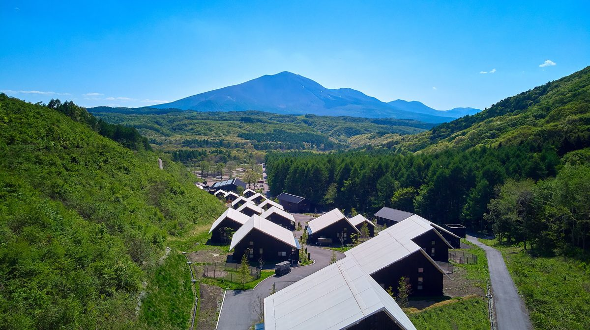

群馬県の犬と泊まれる宿 57 軒
群馬県の宿 57 軒を、すべてこのページに載せています。宿名・市町村名と、添い寝・ケージ・食事同伴などの条件で絞り込めます。犬とおでかけできる場所は 宿の一覧の下 にあります。ほかの県は 県から宿を探す から選べます。
寝る場所犬用ベッド、クレート、床置きマットのどれか
ケージ常設、貸出予約、持参必須を区別
添い寝人用ベッド可否と条件を確認
アメニティトイレ・食器・清掃・足洗いまで確認
 画像提供：楽天トラベル
画像提供：楽天トラベルチェックイン 15:00〜18:00 ／ チェックアウト 10:00 (楽天トラベル掲載情報・2026-10-01 時点。プランにより異なる場合があります)
楽天トラベルのクチコミ評価★★★★☆3.85/ 5 ・ 3,017件
部屋 3.50・清潔感 3.56・サービス 3.92・風呂 3.91
最新のクチコミを読む(楽天トラベル・2026-11-01 投稿)
全室喫煙でタバコ臭が強く、子連れには不向き予約時、喫煙と表記のある部屋と、何も書いていない部屋があり、何も書いていない部屋を禁煙だと認識して予約したのですが、部屋に入ると強烈なタバコの臭い、机の上…
楽天トラベルに投稿された最新の 1 件を、そのまま表示しています(犬連れの方の投稿とは限りません)。
広告｜楽天トラベルでクチコミを読む 楽天トラベル API で取得(2026-11-04)。犬連れ以外の宿泊者も含む評価です。
対象犬・頭数小・中型犬（15kg未満）は1室2頭まで、大型犬（15kg以上30kg未満）は1頭まで。30kg以上は不可。犬付きプランには小・中型犬1頭分を含み、追加は2,200円（最大2頭）。
ケージはある？客室にケージ備え付け。犬だけで留守番する際は備え付けケージを使用。
夜はどこで寝る？犬可客室は和室10畳（2種）と和室7.5畳の3タイプ。7.5畳は小・中型犬のみ。
持ち込み判断温泉街の移動用バッグ・クレート、慣れた寝具を検討。年1回の狂犬病予防接種と有効期限内の伝染病予防接種または抗体検査が条件。
予約前の確認食事会場に犬は同伴不可。館内の同伴可能範囲と温泉利用中の留守番方法を確認。公式確認：2026-10-03
ワクチン接種済みが条件 主要駅から車で(目安・渋滞なし): 長野駅 約1時間04分・73.7km、高崎駅 約1時間30分・82.4km、松本駅 約1時間56分・137.5km
広告｜楽天トラベルで空室・条件を確認この宿への旅行プラン →
ここへのわんこ旅行プラン
群馬県嬬恋村
CARO FORESTA 北軽井沢 RIO
所在地 〒377-1524 群馬県吾妻郡嬬恋村鎌原1053-8975 · 公式情報
コテージに宿泊する場合も、チェックイン・チェックアウトは本館で行います。車のまま本館へお越しください。
対象犬・頭数犬同伴を前提とした高原の宿。犬料金は1泊 小型犬2,750円・中型犬3,300円・大型犬3,850円、2頭目以降1,100円（税込、公式料金表）。体重区分・頭数上限は予約時確認。
ケージはある？大・中ケージの貸出あり、数量限定。留守番・追加備品は予約前確認。
夜はどこで寝る？同室滞在。人用寝具の利用可否は宿泊規約で確認。
持ち込み判断普段の寝具・食事、雨具・防寒具は持参候補。コテージ2階に犬だけを残さない。小型犬で柵が不安ならサークル持参。
食事・一緒に過ごせる範囲レストランと館内の大半で犬同伴可。オリジナルドッグコースはチェックイン時に確認。共用ラン約100坪、全面ウッドチップ。
予約前の重要確認野生動物がいるため庭の夜間散歩は控え、夜間は共用ランを利用。山間部の気温・道路状況、冬季設備の営業を予約前確認。
公式情報で確認できた設備・特徴CHECK
- 犬同伴客室
- 高原散歩
- ドッグラン約100坪
- 駐車場
- 季節対策が必要
主要駅から車で(目安・渋滞なし): 長野駅 約57分・54.7km、高崎駅 約1時間16分・61.0km、松本駅 約1時間50分・83.8km
この宿への旅行プラン →
広告｜Yahoo!トラベル
Yahoo!トラベルの施設ページへ移動します(施設の同一性は名称と所在地で確認 2026-09-26)。犬の宿泊条件・料金・空室は予約画面で最新の表示を確認してください。当サイトは予約・料金の受け取りをしません。
公式情報確認日：2026-10-07
ここへのわんこ旅行プラン
群馬県草津町
Rakuten STAY VILLA 草津温泉
 画像提供：楽天トラベル
画像提供：楽天トラベルチェックイン 15:00〜22:00 ／ チェックアウト 10:00 (楽天トラベル掲載情報・2026-10-01 時点。プランにより異なる場合があります)
楽天トラベルのクチコミ評価★★★★☆4.28/ 5 ・ 71件
部屋 4.54・清潔感 4.42・サービス 4.17・風呂 4.31
最新のクチコミを読む(楽天トラベル・2026-10-31 投稿)
食事と温泉に満足、また利用したいです夕食は鉄板焼きを選びましたが、お肉の質もよくワイワイとパーティーのような形で楽しめました。朝食の和食膳も美味しくいただけました。調味料が購入しないといけないのが…
楽天トラベルに投稿された最新の 1 件を、そのまま表示しています(犬連れの方の投稿とは限りません)。
広告｜楽天トラベルでクチコミを読む 楽天トラベル API で取得(2026-11-04)。犬連れ以外の宿泊者も含む評価です。
所在地 群馬県吾妻郡草津町草津745 · 公式情報
対象犬・頭数ペット対応客室(014・015・016・017)限定で小・中・大型犬を合計2頭まで。犬料金無料(公式)。
ケージはある？客室にケージとペット用ベッドを用意(公式)。ペットシート・フードボウル・ペット用タオルあり。留守番条件は予約時に確認。
夜はどこで寝る？同室滞在。人用ベッド・布団・ソファ・浴槽は犬利用不可。
持ち込み判断館内・温泉街移動用キャリー、寝具、食事を持参候補に。狂犬病・混合ワクチン接種済みが条件。証明書提出は不要、ヒート中は不可。
食事・一緒に過ごせる範囲温泉街旅行向け。ドッグラン・足洗い場の有無は客室詳細で確認。
予約前の重要確認温泉利用中の留守番方法、冬季道路、ペット可の客室タイプを確認。
公式情報で確認できた設備・特徴CHECK
- ペット対応ヴィラ
- 草津温泉
- キッチン確認候補
- 駐車場確認
- 無人チェックイン
Rakuten STAY 共通案内：公式ペット特集のサイズ区分は小型犬10kg未満・中型犬25kg未満・大型犬40kg未満で、小・中・大型犬合計2頭まで。フード・おやつ・タオルなど必要な物は持参。犬料金の有無と人用寝具の扱いは共通FAQ・予約画面で確認してください。公式確認：2026-10-03
ワクチン接種済みが条件 主要駅から車で(目安・渋滞なし): 長野駅 約1時間03分・72.9km、高崎駅 約1時間30分・83.6km、松本駅 約1時間54分・136.7km
広告｜楽天トラベルで空室・条件を確認この宿への旅行プラン →
公式情報確認日：2026-10-07
ここへのわんこ旅行プラン
 画像提供：楽天トラベル
画像提供：楽天トラベル楽天トラベルのクチコミ評価★★★★☆4.04/ 5 ・ 2,541件
部屋 4.07・清潔感 3.90・サービス 4.14・風呂 4.18
最新のクチコミを読む(楽天トラベル・2026-10-30 投稿)
リフォーム済みの綺麗な内装と広い温泉に満足10月26日に宿泊しました。水上渓谷のほとりにある大きなホテルです。外観は古いですが、内装は、玄関、ロビー、お部屋と全てリフォーム済みでとても綺麗…
楽天トラベルに投稿された最新の 1 件を、そのまま表示しています(犬連れの方の投稿とは限りません)。
広告｜楽天トラベルでクチコミを読む 楽天トラベル API で取得(2026-11-04)。犬連れ以外の宿泊者も含む評価です。
客室で食事をとるので、犬と離れずに過ごせるみなかみの宿。
所在地 群馬県利根郡みなかみ町小日向573 · 公式情報
対象犬・頭数1室2頭まで。室内で生活を共にする犬、生後半年以上。
犬の宿泊料金1頭につき3,000円（税別）。泊単位は規約の文面に明記なし。
ケージ・持参判断予約前確認 ケージの有無と寸法を確認し、必要なら普段のクレートを持参。
夜はどこで寝る？人用ベッドで一緒に就寝可。 公式ページにベッドでの添い寝可と記載。
食事同伴客室食。犬用の料理は前日15時までの予約制。
ドッグランD+客室の宿泊者専用ドッグラン（無料）。
予約前の重要確認施設名の表記と運営館名、犬の体格・頭数・料金、利用規約(PDF)の内容を予約前に確認。
犬用備品・設備CHECK
- トイレシート、ウンチ袋、タオル、ドライヤー、粘着ローラー、消臭剤、虫よけスプレー、シャンプー、ブラシ、食器、水飲み器、散歩バッグ
客室差：犬と同伴できるのはD+の客室・ドッグランフロアのみ（旅館全体の全客室ではない）。
主要駅から車で(目安・渋滞なし): 高崎駅 約1時間00分・60.4km、長野駅 約2時間00分・131.3km、大宮駅 約2時間05分・141.3km
広告｜楽天トラベルで空室・条件を確認この宿への旅行プラン →
公式情報確認日：2026-10-03。料金・犬の条件・客室差は予約前に再確認。人用の寝具を犬が使えるかは、確認できていない場合は予約前確認としています。
ここへのわんこ旅行プラン
 画像提供：楽天トラベル
画像提供：楽天トラベルチェックイン 15:00〜18:00 ／ チェックアウト 11:00 (楽天トラベル掲載情報・2026-10-01 時点。プランにより異なる場合があります)
楽天トラベルのクチコミ評価★★★★☆4.73/ 5 ・ 69件
部屋 4.92・清潔感 4.89・サービス 4.76・風呂 4.81
最新のクチコミを読む(楽天トラベル・2026-10-05 投稿)
露天風呂と絶品料理、わんこも大満足!長めのいい露天風呂、お部屋がとても素晴らしいですが、何と言ってもお料理が美味しいです!到着してすぐに案内されるお席にはわんこ用のお椅子もありご機嫌です ここ…
楽天トラベルに投稿された最新の 1 件を、そのまま表示しています(犬連れの方の投稿とは限りません)。
広告｜楽天トラベルでクチコミを読む 楽天トラベル API で取得(2026-11-04)。犬連れ以外の宿泊者も含む評価です。
全天候型ドッグランがある伊香保温泉の犬連れ宿。
所在地 群馬県渋川市伊香保町伊香保166-3 · 公式情報
対象犬・頭数体重15kg未満かつ体高20〜60cm未満の小〜中型犬。1人あたり1頭まで。生後4か月以上。
犬の宿泊料金1頭につき4,000円（税込）。泊単位は同意書の文面に明記なし。
ケージ・持参判断全室にケージ1台。クレート・サークルの貸出もあり。 2頭以上なら追加のクレート・サークル貸出を予約前に確認。
夜はどこで寝る？客室のケージ、または持参の寝具。寝具の上や中に犬を入れたり乗せたりしないこと（同意書）。
食事同伴犬と同じ空間で食事可。朝は犬用のやぎミルク・パン、夕食の犬用惣菜は別注文。
ドッグラン屋根付きピロティの全天候型ドッグラン(7:00〜20:00、貸切ではない)。
予約前の重要確認中学生未満は宿泊不可。狂犬病・5種以上混合は接種後2週間以上1年未満の証明コピーが必要。接種不可時は猶予証明と抗体検査証明を提出。ホテル松本楼は犬同伴不可。
犬用備品・設備CHECK
- ケージ、トイレシート、ウンチ袋、犬用バスタブ、シャンプー・コンディショナー
客室差：客室は3タイプ。犬関連の違いは記載なし。
ワクチン・狂犬病の証明書の提示・持参あり 主要駅から車で(目安・渋滞なし): 高崎駅 約34分・25.4km、大宮駅 約1時間42分・109.5km、宇都宮駅 約1時間52分・119.9km
広告｜楽天トラベルで空室・条件を確認この宿への旅行プラン →
公式情報確認日：2026-10-07。料金・犬の条件・客室差は予約前に再確認。人用の寝具を犬が使えるかは、確認できていない場合は予約前確認としています。
ここへのわんこ旅行プラン
群馬県長野原町・北軽井沢
ANA ホリデイ・イン リゾート軽井沢
 画像提供：楽天トラベル
画像提供：楽天トラベルチェックイン 15:00〜23:00 ／ チェックアウト 11:00 (楽天トラベル掲載情報・2026-10-01 時点。プランにより異なる場合があります)
楽天トラベルのクチコミ評価★★★★☆4.34/ 5 ・ 852件
部屋 4.42・清潔感 4.40・サービス 4.32・風呂 4.30
最新のクチコミを読む(楽天トラベル・2026-10-31 投稿)
浅間山を望むお部屋でゆったりと癒やしの時間リニューアルしてから2回目の宿泊です。お部屋も綺麗で広く、浅間ビューのお部屋に宿泊。きれいに浅間山が見えました。お部屋でゆっくりできたので緑と浅間山に癒さ…
楽天トラベルに投稿された最新の 1 件を、そのまま表示しています(犬連れの方の投稿とは限りません)。
広告｜楽天トラベルでクチコミを読む 楽天トラベル API で取得(2026-11-04)。犬連れ以外の宿泊者も含む評価です。
北軽井沢の森にあるリゾート。1日2組限定のプライベートドッグラン付きコテージがある。
所在地 群馬県吾妻郡長野原町北軽井沢2032-16 · 公式情報
犬の宿泊料金ドッグフレンドリーコテージは1頭3,000円。ドッグホテルは3,300〜5,500円(大きさ別)。
ケージ・持参判断客室にケージを用意。 寸法を確認し、必要なら普段のクレートを持参。
夜はどこで寝る？客室のケージ。寝具の扱いは予約前確認。 人用ベッドを犬が使えるかは予約前に確認してください。
ドッグラン専用ラン付きコテージと共用ランあり。共用はグリーンシーズン宿泊者無料・外来1頭500円、ウィンターシーズン宿泊者・外来とも1頭1,200円。
予約前の重要確認館内・ゴルフ場は散歩不可。ドッグホテル利用約款・同意書が必要。ワクチン条件は予約前確認。
客室差：犬と泊まれるのはドッグフレンドリーコテージ(1日2組)。
主要駅から車で(目安・渋滞なし): 長野駅 約59分・56.1km、高崎駅 約1時間16分・60.7km、松本駅 約1時間52分・88.7km
広告｜楽天トラベルで空室・条件を確認この宿への旅行プラン →
公式情報確認日：2026-10-07。料金・犬の条件・客室差は予約前に再確認。人用の寝具を犬が使えるかは、確認できていない場合は予約前確認としています。
ここへのわんこ旅行プラン
 画像提供：楽天トラベル
画像提供：楽天トラベルチェックイン 15:00〜23:00 ／ チェックアウト 10:30 (楽天トラベル掲載情報・2026-10-01 時点。プランにより異なる場合があります)
楽天トラベルのクチコミ評価★★★☆☆3.43/ 5 ・ 348件
部屋 3.31・清潔感 3.16・サービス 3.57・風呂 3.33
最新のクチコミを読む(楽天トラベル・2026-10-30 投稿)
ペットと夫婦で宿泊レストランから見える朝の風景が最高に素晴らしかった、お風呂は24時間対応でいつでも入れます、お部屋も広く、トイレも広かったです、お食事は品数多く美味しかったが、揚げも…
楽天トラベルに投稿された最新の 1 件を、そのまま表示しています(犬連れの方の投稿とは限りません)。
広告｜楽天トラベルでクチコミを読む 楽天トラベル API で取得(2026-11-04)。犬連れ以外の宿泊者も含む評価です。
伊香保温泉のホテルで、犬と同室に泊まれる部屋が1日5室ある。
所在地 群馬県渋川市伊香保町伊香保557-23 · 公式アクセス
対象犬・頭数小型犬のみ(10kg未満で、キャリーバスケットに入っても吠えないこと)。トイレのしつけ・予防接種済み・無駄吠えしないこと。発情中・夜鳴き癖は不可。
犬の宿泊料金1匹1泊2,200〜3,300円。5kg以下で密閉型のカバン・ケージ内で過ごす場合は割引の案内。
ケージ・持参判断必要(客室まではキャリーバスケットかケージ。持参品にゲージの案内)。
夜はどこで寝る？同室宿泊できる客室。留守番可の案内。 寝具・トイレは普段使っているものの持参を求める案内。人用の寝具を犬が使えるかは予約前に確認してください。
食事同伴犬が利用できる場所は客室のみの案内。食事中の扱いは予約前確認。
ドッグラン館内には無し(近隣のドッグランを案内)。
予約前の重要確認持参品: 食器、フード、トイレシーツ、毛布やマット、ケージ、予防接種の証明書またはコピー。予約時に体重・夜鳴きなし等の記入が必要。
客室差：犬と泊まれるのは同室宿泊できる客室だけ(1日5室限定)。
ワクチン・狂犬病の証明書の提示・持参あり 主要駅から車で(目安・渋滞なし): 高崎駅 約35分・25.8km、大宮駅 約1時間43分・109.8km、宇都宮駅 約1時間53分・120.3km
広告｜楽天トラベルで空室・条件を確認この宿への旅行プラン →
公式情報確認日：2026-09-26。料金・犬の条件・客室差は予約前に再確認。人用の寝具を犬が使えるかは、確認できていない場合は予約前確認としています。
ここへのわんこ旅行プラン
群馬県嬬恋村・北軽井沢
ゆとりろガーデン北軽井沢 with DOGS
 画像提供：楽天トラベル
画像提供：楽天トラベルチェックイン 15:00〜21:00 ／ チェックアウト 10:00 (楽天トラベル掲載情報・2026-10-01 時点。プランにより異なる場合があります)
楽天トラベルのクチコミ評価★★★☆☆3.63/ 5 ・ 538件
部屋 3.66・清潔感 3.53・サービス 3.72・風呂 3.46
最新のクチコミを読む(楽天トラベル・2026-10-25 投稿)
機械音が響き眠れず、照明とコンセントも不便201号室、20分おきくらいで機械音が響き夜眠ることが出来なかった。照明が暗すぎ。コンセントが少なすぎ。クチコミの詳細はこちらから https…
楽天トラベルに投稿された最新の 1 件を、そのまま表示しています(犬連れの方の投稿とは限りません)。
広告｜楽天トラベルでクチコミを読む 楽天トラベル API で取得(2026-11-04)。犬連れ以外の宿泊者も含む評価です。
標高1,200mの森のリゾートホテル。屋外ドッグラン3か所(計1,050㎡)と屋内ドッグランがある。
所在地 群馬県吾妻郡嬬恋村鎌原1514 · 公式情報
対象犬・頭数1室につき小型犬2頭まで、または中型犬・大型犬は1頭まで。狂犬病と5種以上の混合ワクチンの接種証明が必要。
犬の宿泊料金犬の利用料 1頭4,400円・2頭6,600円(税込)をフロントで支払う案内。
ケージ・持参判断客室の犬用備品にケージの案内あり。
夜はどこで寝る？客室。犬を部屋に残したままの長時間の敷地外への外出は控えるよう案内。 人用ベッドを犬が使えるかは予約前に確認してください。
食事同伴レストランは犬同伴可（リードフック設置・ドッグカート貸出、犬用メニューあり）。犬の食事は持参も可。
ドッグラン屋外ドッグラン 全犬種用2か所・小型犬用1か所(計1,050㎡・7〜21時)、屋内ドッグラン(地下1階・約50㎡・7〜21時)は小・中型犬専用（運営会社の案内では小型犬用。大型犬は不可）。
予約前の重要確認宿泊時に身分証のコピーとペット宿泊同意書への署名が必要。接種は接種後2週間以上1年以内（混合ワクチンは1年以内の抗体検査証明で代替可）。一時的に部屋を離れる時はケージ・クレートで留守番、犬を残して敷地外へ出ることは不可。屋内共用部では指定フリーエリアを除きマナーウェア着用。
犬用備品・設備CHECK
- ケージ、消臭スプレー、水飲みボウル、トイレ・トイレシーツ、粘着ローラー、ウェットシート、エチケット袋、ブラシ、散歩用懐中電灯、ハンディシャワー、ドッグカート(貸出)
ワクチン・狂犬病の証明書の提示・持参あり 主要駅から車で(目安・渋滞なし): 長野駅 約57分・55.0km、高崎駅 約1時間16分・60.7km、松本駅 約1時間50分・84.1km
広告｜楽天トラベルで空室・条件を確認この宿への旅行プラン →
公式情報確認日：2026-10-03。料金・犬の条件・客室差は予約前に再確認。人用の寝具を犬が使えるかは、確認できていない場合は予約前確認としています。
ここへのわんこ旅行プラン
群馬県嬬恋村・北軽井沢
ホテル軽井沢1130 ドッグルーム
 画像提供：楽天トラベル
画像提供：楽天トラベル楽天トラベルのクチコミ評価★★★★☆4.06/ 5 ・ 2,222件
部屋 4.20・清潔感 4.04・サービス 4.01・風呂 4.13
最新のクチコミを読む(楽天トラベル・2026-10-31 投稿)
カニとフレンチを堪能、紅葉と浅間山の絶景1日目のバイキングではカニをふんだんに食べました。2日目は三ツ星フランス料理を戴き大変満足しています。部屋は広く、ベランダからの紅葉と浅間山は絶景です。…
楽天トラベルに投稿された最新の 1 件を、そのまま表示しています(犬連れの方の投稿とは限りません)。
広告｜楽天トラベルでクチコミを読む 楽天トラベル API で取得(2026-11-04)。犬連れ以外の宿泊者も含む評価です。
北軽井沢のリゾートホテルに、犬と泊まれる「ドッグルーム」がある。
所在地 群馬県吾妻郡嬬恋村鎌原1453-2 · 公式アクセス
対象犬・頭数大型犬1頭または中型犬2頭まで。生後1歳以上の小型〜大型犬で、しつけができていること。ペット同伴宿泊滞在同意書の提出が必要。
ケージ・持参判断大型ゲージ、ペットシート、器、掃除機・クイックルワイパー、マナー袋、消臭剤あり。専用出入口前に足洗い場（ドッグシャワー）。
夜はどこで寝る？ドッグルーム(4ベッドスイートなど)。 人用のベッドを犬が使えるかは同意書・予約時に確認してください。
食事同伴パブリックスペースへ犬は同伴不可。食事・入浴・短時間の外出中はリードを外してケージへ。長時間の留守番は不可。犬のごはんは持参。
予約前の重要確認狂犬病・5種以上混合ワクチンを1年以内に接種し、接種証明の原本と同意書をチェックイン時に提出（接種できない理由の記入欄あり）。犬の料金・小型犬の頭数上限は公式ページで確認できず予約前確認。
犬用備品・設備CHECK
- 大型ゲージ、ペットシート、器、粘着クリーナー、掃除機、クイックルワイパー、マナー袋、消臭剤、懐中電灯、足洗い場
客室差：犬と泊まれるのはドッグルームだけ。
ワクチン・狂犬病の証明書の提示・持参あり 主要駅から車で(目安・渋滞なし): 長野駅 約56分・54.5km、高崎駅 約1時間15分・61.1km、松本駅 約1時間49分・83.6km
広告｜楽天トラベルで空室・条件を確認この宿への旅行プラン →
公式情報確認日：2026-10-03。料金・犬の条件・客室差は予約前に再確認。人用の寝具を犬が使えるかは、確認できていない場合は予約前確認としています。
ここへのわんこ旅行プラン
群馬県中之条町・四万温泉
四万温泉 渓声の宿 いずみや
 画像提供：楽天トラベル
画像提供：楽天トラベルチェックイン 14:00〜18:00 ／ チェックアウト 10:00 (楽天トラベル掲載情報・2026-10-01 時点。プランにより異なる場合があります)
楽天トラベルのクチコミ評価★★★★☆4.47/ 5 ・ 205件
部屋 4.40・清潔感 4.33・サービス 4.33・風呂 4.47
最新のクチコミを読む(楽天トラベル・2026-10-25 投稿)
部屋付き源泉掛け流し露天風呂で、犬連れ可能の宿としては最高ランク、必ず再訪しますお部屋のお風呂、貸切風呂ともにとても素晴らしいと思いました。 ただ洗い場が寒い。構造上仕方ないですが、真冬だったら髪…
楽天トラベルに投稿された最新の 1 件を、そのまま表示しています(犬連れの方の投稿とは限りません)。
広告｜楽天トラベルでクチコミを読む 楽天トラベル API で取得(2026-11-04)。犬連れ以外の宿泊者も含む評価です。
四万川の清流沿いの1日5組の宿。犬と泊まれる露天風呂付きの客室があり、部屋に犬専用の湯船も用意する案内。
所在地 群馬県吾妻郡中之条町大字四万3981-1 · 公式情報
対象犬・頭数小型犬と、中型犬(15kg程度)2頭まで。愛犬宿泊同意書と、5種以上の混合ワクチンの接種証明書・狂犬病予防注射済証(コピーか原本)を当日に持参。
犬の宿泊料金1頭3,300円(税込、入館料としてチェックアウト時精算)
夜はどこで寝る？犬と泊まれる客室(最下階の和洋特別室など。犬はペット用出入口から直接部屋へ) 公式の犬向け案内に『ワンちゃんと添い寝OK』とある。
食事同伴犬と一緒に行けるのは部屋のみで、食事処は同伴不可。犬の食事はチェックイン時に申し込めば用意
予約前の重要確認貸切風呂は犬と一緒に使えない。同意書と証明書が出せない場合は泊まれない。
犬用備品・設備CHECK
- フードボウル、おぼん、タオル、ペット用ドライヤー、ペットドライルーム、ペットシーツ、トイレシート、ウェットティッシュ、粘着クリーナー、消臭スプレー、足洗い場
客室差：エレベーターなし(階段で移動)。
ワクチン・狂犬病の証明書の提示・持参あり 主要駅から車で(目安・渋滞なし): 高崎駅 約1時間09分・58.0km、長野駅 約1時間45分・102.1km、大宮駅 約2時間14分・138.9km
広告｜楽天トラベルで空室・条件を確認この宿への旅行プラン →
公式情報確認日：2026-09-26。料金・犬の条件・客室差は予約前に再確認。人用の寝具を犬が使えるかは、確認できていない場合は予約前確認としています。
ここへのわんこ旅行プラン

浅間山を望む北軽井沢のヴィラ。緑に囲まれた一棟貸しの客室が並ぶ(施設提供の写真)写真提供：あさま空山望 写真は施設の許諾を得て掲載(2026-10-30 提供)
チェックイン 15:00〜22:00 ／ チェックアウト 12:00 (楽天トラベル掲載情報・2026-10-01 時点。プランにより異なる場合があります)
浅間山を望む北軽井沢の一棟貸しヴィラリゾート。宿泊者専用の共有ドッグラン(500㎡)、プライベートドッグラン付きのヴィラ、犬と入れるテラスラウンジがある。
所在地 群馬県吾妻郡長野原町北軽井沢2032-2577 · 公式情報
対象犬・頭数全ヴィラで犬と泊まれる。ポラリス・シリウスは3頭まで(20kg以上の大型犬は1頭まで)、カシオペアは小・中型犬3頭まで、ポラリスDOGスイート(1室限定)は5頭まで(大型犬は2頭まで)。予約前に愛犬規約を確認。
犬の宿泊料金1頭あたり小・中型犬5,000円(税込)/泊、大型犬8,000円(税込)/泊(予約画面のオプションで申し込み)
夜はどこで寝る？一棟貸しヴィラ(テラスやリビングで犬と一緒に食事できる)。客室内の和室・洋寝室・ロフト・トイレ・浴室は犬の利用不可（規約）。犬だけを残す場合はケージへ。マーキング癖のある犬や老犬はおむつ着用。客室の中では条件付きでリードを外して過ごせる(施設へ確認 2026-10-30。条件の詳細は予約時に確認)。
食事同伴ヴィラで犬と一緒に食事できる。国産・無添加の犬用の食事あり(夕食『信州のめぐみWAN御前』など)。天空ダイニングのテラス席とラウンジテラスにも犬と立入可（屋内レストランは不可）。
ドッグラン宿泊者専用の共有ドッグラン500㎡、ポラリスはプライベートドッグラン付き、レストラン専用ドッグラン200㎡
予約前の重要確認狂犬病・混合ワクチン接種（または所定の抗体検査）、基本的なしつけ、生理中でないことが条件。20kg以上の大型犬の客室はポラリスとシリウス(2025年4月1日からシリウスも可。施設へ確認 2026-10-30)。
犬用備品・設備CHECK
- ケージ、ペット用バスタオル、ペット用トイレ・シート、トイレ用防臭袋、粘着クリーナー、食器(水・エサ入れ)、消臭スプレー、犬のおやつ、お散歩バッグ、足洗い場
客室差：ヴィラの種類で頭数・大型犬の可否が違う(上記)。
主要駅から車で(目安・渋滞なし): 長野駅 約59分・56.1km、高崎駅 約1時間16分・60.7km、松本駅 約1時間52分・88.7km
広告｜楽天トラベルで空室・条件を確認この宿への旅行プラン →
公式情報確認日：2026-10-03。施設への確認日：2026-10-30(大型犬の客室・客室内の過ごし方)。料金・犬の条件・客室差は予約前に再確認。人用の寝具を犬が使えるかは、確認できていない場合は予約前確認としています。
ここへのわんこ旅行プラン
群馬県草津町
草津温泉 ホテルヴィレッジ ドッグフレンドリー ログハウス
 画像提供：楽天トラベル
画像提供：楽天トラベル楽天トラベルのクチコミ評価★★★★☆4.34/ 5 ・ 5,098件
部屋 4.21・清潔感 4.23・サービス 4.45・風呂 4.34
最新のクチコミを読む(楽天トラベル・2026-10-29 投稿)
今年3回目のリピ、温泉と接客に大満足今年3回目のリピになります。紅葉には少し早かったようでしたが色付きが楽しめました。シャトルバスの運転手の方がとても親切で接客が素晴らしくレベルが…
楽天トラベルに投稿された最新の 1 件を、そのまま表示しています(犬連れの方の投稿とは限りません)。
広告｜楽天トラベルでクチコミを読む 楽天トラベル API で取得(2026-11-04)。犬連れ以外の宿泊者も含む評価です。
草津温泉の森のリゾートホテル。犬と泊まれるのは林の中のログハウスで、カフェのテラスと森林浴コースは犬と一緒に行ける。
所在地 群馬県吾妻郡草津町大字草津618番地 · 公式情報
対象犬・頭数犬と泊まれるのはドッグフレンドリーログハウス(6室)。1部屋につき最大2頭。狂犬病と5種以上混合ワクチンの接種後2週間以上1年未満で、到着時に2種類の書類を提示。犬の大きさの上限は予約前確認。
犬の宿泊料金1頭につき3,300円（税込）を現地払い。泊単位は同意書に明記なし。
ケージ・持参判断ケージあり(幅97.5×奥行66.5×高さ55.5cm)。一時的に部屋を離れる時はケージで留守番、長時間の外出は不可。
夜はどこで寝る？ドッグフレンドリーログハウス(55〜62㎡、定員5名。3名以上は布団)
食事同伴カフェザフォレストのテラスは犬同伴可（リードフックあり）。ログハウスにキッチン用品あり。ホテル館内への犬同伴は不可。
予約前の重要確認ホテル館内・テルメテルメ館内・アクティビティ施設は同伴不可。シャトルバスはケージに入れた状態のみ可。犬の食事・寝具・リードは持参。
犬用備品・設備CHECK
- ケージ、フードボウル、トイレシート、犬用オムツ、ポリ袋、消臭スプレー、タオル
主要駅から車で(目安・渋滞なし): 長野駅 約1時間06分・74.3km、高崎駅 約1時間33分・83.5km、松本駅 約1時間57分・138.1km
広告｜楽天トラベルで空室・条件を確認この宿への旅行プラン →
公式情報確認日：2026-10-07。料金・犬の条件・客室差は予約前に再確認。人用の寝具を犬が使えるかは、確認できていない場合は予約前確認としています。
ここへのわんこ旅行プラン
群馬県嬬恋村
本白根温泉 嬬恋プリンスホテル ドッグフレンドリールーム
 画像提供：楽天トラベル
画像提供：楽天トラベルチェックイン 15:00〜24:00 ／ チェックアウト 11:00 (楽天トラベル掲載情報・2026-10-01 時点。プランにより異なる場合があります)
楽天トラベルのクチコミ評価★★★★☆4.16/ 5 ・ 490件
部屋 4.22・清潔感 4.25・サービス 4.19・風呂 3.96
最新のクチコミを読む(楽天トラベル・2026-10-31 投稿)
サービスや設備は満足だが虫と忘れ物が残念今の時期、天気さえよければ満足できるのですが、残念ながらいまいちの天候でした。部屋・接客サービス・ロケーション・朝食・温泉お風呂・設備全て満足です。…
楽天トラベルに投稿された最新の 1 件を、そのまま表示しています(犬連れの方の投稿とは限りません)。
広告｜楽天トラベルでクチコミを読む 楽天トラベル API で取得(2026-11-04)。犬連れ以外の宿泊者も含む評価です。
浅間連峰を望む嬬恋高原の一軒宿。犬と泊まれる客室6室、宿泊者無料の約1,000㎡の天然芝ドッグラン、ドッグフレンドリーラウンジがある。
所在地 群馬県吾妻郡嬬恋村嬬恋高原 · 公式情報
対象犬・頭数小型犬(おおむね10kg未満)、最大2頭。犬種・年齢の制限はなし。狂犬病と5種以上の混合ワクチン(接種後2週間以上1年以内)の証明書のコピーをチェックイン時に提出(猶予証明書・抗体価検査結果なども可)。『ペット同伴宿泊滞在同意書』を事前に登録。
犬の宿泊料金2頭目は追加6,000円の案内。1頭目の料金はプランで確認
夜はどこで寝る？ドッグフレンドリールーム(最大4名。浅間山サイド3室はプライベートドッグラン付き、本白根山サイド3室) ベッドで一緒に寝ることはできない。犬はソファーかケージを使う案内。
食事同伴夕食は「愛犬とご一緒にドッグラウンジでのディナー」か、犬は留守番でレストランのコースディナーかを選ぶ。朝は芝生でのモーニングピクニックの案内。
ドッグラン約1,000㎡の天然芝ドッグラン(宿泊者無料)、浅間山サイドの客室はプライベートドッグラン付き
予約前の重要確認犬の預かりはなし。犬のフード・寝具は持参。
犬用備品・設備CHECK
- 空気清浄機、加湿器、ペットサークル、フードボウル、ペット用給水器、ペットトイレ、トイレシート(4枚)、ダストボックス、消臭スプレー、粘着ローラー、温水の足洗い場
客室差：浅間山サイド(眺望よし・プライベートドッグラン付き)3室と本白根山サイド3室。
ワクチン・狂犬病の証明書の提示・持参あり 主要駅から車で(目安・渋滞なし): 長野駅 約1時間04分・59.3km、高崎駅 約1時間36分・76.7km、松本駅 約1時間58分・88.4km
広告｜楽天トラベルで空室・条件を確認この宿への旅行プラン →
公式情報確認日：2026-10-03。料金・犬の条件・客室差は予約前に再確認。人用の寝具を犬が使えるかは、確認できていない場合は予約前確認としています。
ここへのわんこ旅行プラン
群馬県前橋市・赤城山
愛犬と泊まれる古民家リトリート 赤城山 - 懐 -
 画像提供：楽天トラベル
画像提供：楽天トラベルチェックイン 15:00〜18:30 ／ チェックアウト 11:00 (楽天トラベル掲載情報・2026-10-01 時点。プランにより異なる場合があります)
楽天トラベルのクチコミ評価★★★★☆4.40/ 5 ・ 92件
部屋 4.45・清潔感 4.54・サービス 4.44・風呂 4.38
最新のクチコミを読む(楽天トラベル・2026-10-27 投稿)
古民家の雰囲気と料理に癒やされ大満足古民家の雰囲気が最高すぎて幻想的でほんとに癒されました!ラウンジのグァバジュースが美味しすぎてはまってしまい、グァバジュースを探し回る毎日です笑お料理も素晴…
楽天トラベルに投稿された最新の 1 件を、そのまま表示しています(犬連れの方の投稿とは限りません)。
広告｜楽天トラベルでクチコミを読む 楽天トラベル API で取得(2026-11-04)。犬連れ以外の宿泊者も含む評価です。
赤城山の麓の古民家調リトリート。温泉大浴場・露天風呂以外は館内どこでも一緒に過ごせ、ダイニングもフリードリンク・軽食のラウンジも同伴可。サータ社製ベッドで添い寝OK(保護シーツあり)。山の地形を生かした約250㎡のウッドチップ屋外ドッグラン(二重扉、6:00〜21:00)、ファイヤーピット、愛犬とお揃いの作務衣。
対象犬・頭数全14室すべて愛犬同伴可。1室2頭まで(体重25kg・体高50cm以下、生後6か月以上。闘犬種は不可)。1年以内の狂犬病・混合ワクチン接種済みの室内犬のみで、チェックイン時に証明書(抗体検査・猶予証明書も可)を提示。ノミ・マダニ予防済み。愛犬宿泊同意書に署名。1頭1泊3,300円(税込)。
夜はどこで寝る？客室(ベッドで添い寝可) ベッドに乗せる場合はマナーパンツ着用(館内で用意)。保護シーツあり。
ドッグランあり(約250㎡・ウッドチップ・6:00〜21:00)
予約前の重要確認入館時に足を洗うか拭く。温泉大浴場・露天風呂は犬同伴不可。証明書がない場合は館内の利用範囲に制限あり。
犬用備品・設備CHECK
- マナーパンツ、ベッド保護シーツ、トイレ・食器などの基本アメニティ、お揃いの作務衣
客室差：全室同伴可。温泉大浴場・露天風呂は不可。ドッグラン・客室以外ではリード着用。ペットカートの持ち込み不可。
ワクチン・狂犬病の証明書の提示・持参あり 主要駅から車で(目安・渋滞なし): 高崎駅 約38分・31.3km、大宮駅 約1時間39分・101.0km、宇都宮駅 約1時間39分・103.3km
広告｜楽天トラベルで空室・条件を確認この宿への旅行プラン →
公式情報確認日：2026-10-07。料金・犬の条件・客室差は予約前に再確認。人用の寝具を犬が使えるかは、確認できていない場合は予約前確認としています。
ここへのわんこ旅行プラン
群馬県草津町・草津温泉
ペットと泊まれる宿 コンドミニアム フラットレット草津
 画像提供：楽天トラベル
画像提供：楽天トラベルチェックイン 15:00〜21:00 ／ チェックアウト 10:00 (楽天トラベル掲載情報・2026-10-01 時点。プランにより異なる場合があります)
楽天トラベルのクチコミ評価★★★★☆4.24/ 5 ・ 111件
部屋 4.28・清潔感 4.24・サービス 4.33
最新のクチコミを読む(楽天トラベル・2026-10-27 投稿)
サービスが充実した素敵な宿、また利用します!サービスが充実していてとても素敵な宿でした。また草津旅行の際は利用します!クチコミの詳細はこちらから https://review.travel…
楽天トラベルに投稿された最新の 1 件を、そのまま表示しています(犬連れの方の投稿とは限りません)。
広告｜楽天トラベルでクチコミを読む 楽天トラベル API で取得(2026-11-04)。犬連れ以外の宿泊者も含む評価です。
草津温泉の貸マンションタイプの宿。館内すべて入室可能で、消灯時間や門限がなく散歩の時間も自由。一年中(年末年始・お盆も)ペットOK。宿泊者専用ドッグラン(7:30〜21:30)、温水の足洗い場、犬の食事作りや冷蔵保存ができる設備。宿泊者限定でチェックイン当日15:00〜21:00は無料のペット一時預かり(温泉巡りや食事の外出時。小型犬向け)。
対象犬・頭数犬(小型犬〜大型犬30kgまで)・猫・小動物(うさぎ・フェレット・小鳥など)が宿泊可。大型犬は2頭まで。危険犬種・超大型犬は不可。トイレなど基本的なしつけと各種ワクチン接種が必要。ペット宿泊料金 1泊1頭1,000円(税別)。ベッドやソファには乗せない。ペットを残しての外出は避ける。
ケージ・持参判断用意なし(持参不要、普段使うなら持参推奨) 必要なら持参
夜はどこで寝る？客室 ベッド・ソファには乗せない。
ドッグランあり(宿泊者専用・7:30〜21:30)
予約前の重要確認普段の食事・臭いのついたシーツやおもちゃを持参。粗相・備品破損はクリーニング代。
犬用備品・設備CHECK
- 温水の足洗い場、犬の食事作り・冷蔵保存の設備、一時預かり(条件あり)
客室差：館内はどこでも入室可。ドッグラン以外はリード着用。
ワクチン接種済みが条件 主要駅から車で(目安・渋滞なし): 長野駅 約1時間03分・73.4km、高崎駅 約1時間29分・82.3km、松本駅 約1時間54分・137.3km
広告｜楽天トラベルで空室・条件を確認この宿への旅行プラン →
公式情報確認日：2026-09-27。料金・犬の条件・客室差は予約前に再確認。人用の寝具を犬が使えるかは、確認できていない場合は予約前確認としています。
ここへのわんこ旅行プラン
群馬県みなかみ町・利根
風木立の川辺 紫明館(ペット専用客室)
 画像提供：楽天トラベル
画像提供：楽天トラベルチェックイン 15:00〜18:00 ／ チェックアウト 10:00 (楽天トラベル掲載情報・2026-10-01 時点。プランにより異なる場合があります)
楽天トラベルのクチコミ評価★★★★☆4.26/ 5 ・ 67件
部屋 4.44・清潔感 4.26・サービス 4.11・風呂 3.83
最新のクチコミを読む(楽天トラベル・2026-10-24 投稿)
部屋は快適だが清掃と食事に改善の余地ありワンコOKの貴重なホテルですが、露天風呂は口コミにあるようぬるく残念、少し手をつければ落ちるホコリやカビが目につきました。夕飯も手の込んだものや地のものが使…
楽天トラベルに投稿された最新の 1 件を、そのまま表示しています(犬連れの方の投稿とは限りません)。
広告｜楽天トラベルでクチコミを読む 楽天トラベル API で取得(2026-11-04)。犬連れ以外の宿泊者も含む評価です。
谷川岳の清らかな水と緑に包まれた宿。ペットと泊まれる客室と食事場所は1階、一般客は2階なので玄関以外で顔を合わせない。ペット同伴の食事用個室、宿泊者無料でノーリードのドッグラン。ロビーにウェルカムコーヒー。
対象犬・頭数犬のみ、小型犬・中型犬まで。1室2頭まで。予防接種済みで、トイレ・無駄吠えをしない・留守番などのしつけができている犬。一緒に過ごせるのは客室内と夕食時の食事処(ペット同伴用の個室)のみで、部屋から食事処まではケージに入れて移動。朝食時は部屋で留守番。
ケージ・持参判断予約前確認(移動用のケージは必要) 移動用に必要
食事同伴夕食はペット同伴の個室で一緒。朝食は部屋で留守番
予約前の重要確認犬の料金・添い寝・アメニティは公式ページで確認できず予約前確認。
客室差：ペット専用客室(1階)のみ。館内設備の破損は修繕費請求あり。エレベーターなし。
ワクチン接種済みが条件 主要駅から車で(目安・渋滞なし): 高崎駅 約1時間02分・65.1km、長野駅 約2時間01分・136.0km、大宮駅 約2時間07分・146.0km
広告｜楽天トラベルで空室・条件を確認この宿への旅行プラン →
公式情報確認日：2026-09-27。料金・犬の条件・客室差は予約前に再確認。人用の寝具を犬が使えるかは、確認できていない場合は予約前確認としています。
ここへのわんこ旅行プラン
群馬県みなかみ町・藤原
Earthboat Minakami Fujiwara
 画像提供：楽天トラベル
画像提供：楽天トラベルチェックイン 15:00〜18:00 ／ チェックアウト 10:00 (楽天トラベル掲載情報・2026-10-01 時点。プランにより異なる場合があります)
森の中のプライベートエリアに建つ独立型の宿(定員3名)。ウッドチップ敷きのアウトドアリビング(リードフック付き)で泥だらけにならず、プライベートエリア内にペットNGエリアはない。室内でのシャンプー・トリミング・ブラッシングは不可。汚損・破損は目安金額表に基づき請求(粗相の清掃8,000円〜など)。
対象犬・頭数種類・大きさ・頭数の制限なし(小型犬・大型犬・猫・うさぎ・フェレットなども可)。基本的なしつけができ、攻撃的でなく、ヒート中・妊娠中でないこと。1年以内に狂犬病予防接種と5種以上の混合ワクチン(猫は3種以上)、ノミ・ダニの予防・駆除済み。室内はケージフリーだが、敷地内ではリード着用か持参のケージ。ペットだけを残して外出しない。
ケージ・持参判断用意なし(敷地内での移動用に持参可) 必要なら持参
夜はどこで寝る？室内(ケージフリー) ベッド・ソファへの粗相は清掃費(目安10,000円)。
ドッグランなし(ウッドチップのアウトドアリビング)
予約前の重要確認ペット料金は公式ページで確認できず予約前確認。拠点ごとの注意事項を確認。
客室差：1棟貸し(定員3名)。チェックイン15:00/アウト10:00。
ワクチン接種済みが条件 主要駅から車で(目安・渋滞なし): 高崎駅 約1時間18分・77.4km、長野駅 約2時間18分・148.2km、大宮駅 約2時間23分・158.2km
広告｜楽天トラベルで空室・条件を確認この宿への旅行プラン →
公式情報確認日：2026-09-27。料金・犬の条件・客室差は予約前に再確認。人用の寝具を犬が使えるかは、確認できていない場合は予約前確認としています。
ここへのわんこ旅行プラン
群馬県みなかみ町・藤原(宝台樹)
Earthboat Minakami Hodaigi
 画像提供：楽天トラベル
画像提供：楽天トラベルチェックイン 15:00〜24:00 ／ チェックアウト 10:00 (楽天トラベル掲載情報・2026-10-01 時点。プランにより異なる場合があります)
森の中のプライベートエリアに建つ独立型の宿(定員3名)。ウッドチップ敷きのアウトドアリビング(リードフック付き)で泥だらけにならず、プライベートエリア内にペットNGエリアはない。室内でのシャンプー・トリミング・ブラッシングは不可。汚損・破損は目安金額表に基づき請求(粗相の清掃8,000円〜など)。
対象犬・頭数種類・大きさ・頭数の制限なし(小型犬・大型犬・猫・うさぎ・フェレットなども可)。基本的なしつけができ、攻撃的でなく、ヒート中・妊娠中でないこと。1年以内に狂犬病予防接種と5種以上の混合ワクチン(猫は3種以上)、ノミ・ダニの予防・駆除済み。室内はケージフリーだが、敷地内ではリード着用か持参のケージ。ペットだけを残して外出しない。
ケージ・持参判断用意なし(敷地内での移動用に持参可) 必要なら持参
夜はどこで寝る？室内(ケージフリー) ベッド・ソファへの粗相は清掃費(目安10,000円)。
ドッグランなし(ウッドチップのアウトドアリビング)
予約前の重要確認ペット料金は公式ページで確認できず予約前確認。拠点ごとの注意事項を確認。
客室差：1棟貸し(定員3名)。チェックイン15:00/アウト10:00。
ワクチン接種済みが条件 主要駅から車で(目安・渋滞なし): 高崎駅 約1時間16分・78.6km、長野駅 約2時間16分・149.5km、大宮駅 約2時間21分・159.5km
広告｜楽天トラベルで空室・条件を確認この宿への旅行プラン →
公式情報確認日：2026-09-27。料金・犬の条件・客室差は予約前に再確認。人用の寝具を犬が使えるかは、確認できていない場合は予約前確認としています。
ここへのわんこ旅行プラン
群馬県草津町・草津温泉
草津温泉 ペットと泊まれる宿 音雅
 画像提供：楽天トラベル
画像提供：楽天トラベルチェックイン 15:00〜18:00 ／ チェックアウト 10:00 (楽天トラベル掲載情報・2026-10-01 時点。プランにより異なる場合があります)
楽天トラベルのクチコミ評価★★★★☆3.76/ 5 ・ 177件
部屋 3.67・清潔感 3.73・サービス 3.96・風呂 3.84
最新のクチコミを読む(楽天トラベル・2026-10-13 投稿)
ペットと食事も温泉も楽しめ、接客も丁寧草津温泉でペットと宿泊できる数少ないホテルですが、まず残念なとこはペットと宿泊でもアメニティが少し足りない気がしたのと、ドッグランがちょっと荒地になってたのと…
楽天トラベルに投稿された最新の 1 件を、そのまま表示しています(犬連れの方の投稿とは限りません)。
広告｜楽天トラベルでクチコミを読む 楽天トラベル API で取得(2026-11-04)。犬連れ以外の宿泊者も含む評価です。
白根山を望む草津温泉の森に囲まれた、かけ流し温泉の宿。自慢のドッグランなどペットのための設備がある。周辺のわんこスポット(クローネンベルク、世界の名犬牧場など)の案内も。
対象犬・頭数完全室内飼いで満1歳以上、犬は15kgまで・1室2匹まで。健康でトイレのしつけ済み、無駄吠え不可（迷惑時は車等へ）。生理前後2週間は不可。狂犬病・ワクチン接種済み（1年以内の証明書を求める場合あり）。
予約前の重要確認持参：ペットのごはん、リード、普段のおもちゃ、ペットのトイレ。汚損・破損は清掃・修繕費。犬料金は予約前確認。
ワクチン接種済みが条件 主要駅から車で(目安・渋滞なし): 長野駅 約1時間05分・73.9km、高崎駅 約1時間32分・83.4km、松本駅 約1時間56分・137.8km
広告｜楽天トラベルで空室・条件を確認この宿への旅行プラン →
公式情報確認日：2026-10-07。料金・犬の条件・客室差は予約前に再確認。人用の寝具を犬が使えるかは、確認できていない場合は予約前確認としています。
ここへのわんこ旅行プラン
群馬県嬬恋村・浅間高原
浅間高原ホテル(愛犬同室の客室)
 画像提供：楽天トラベル
画像提供：楽天トラベルチェックイン 15:00〜24:00 ／ チェックアウト 10:00 (楽天トラベル掲載情報・2026-10-01 時点。プランにより異なる場合があります)
楽天トラベルのクチコミ評価★★★☆☆3.57/ 5 ・ 69件
清潔感 3.86
広告｜楽天トラベルでクチコミを読む 楽天トラベル API で取得(2026-11-04)。犬連れ以外の宿泊者も含む評価です。
標高1,100mでクーラーいらずの浅間高原(全室冷房付き)。東屋のあるドッグラン、雨でも犬と楽しめるリニューアルしたオープンテラス、ダイニングで愛犬と一緒に食事。オフ会にもおすすめ。グランドピアノのある広いダイニング、7棟の貸別荘も。セルフチェックイン。
対象犬・頭数1階109号室、2階213・215・216号室(ナノイーX搭載の冷暖房)で愛犬と同室宿泊可(春には10室の案内)。事前にシャンプー・ブラッシングし、毛が落ちないよう清潔に配慮。犬の糞は持ち帰り。
予約前の重要確認犬の料金・大きさ・頭数・ワクチン証明・添い寝は公式ページで確認できず予約前確認。
客室差：愛犬同室は109・213・215・216号室(エレベーターなし)。
主要駅から車で(目安・渋滞なし): 長野駅 約52分・51.1km、高崎駅 約1時間20分・65.0km、松本駅 約1時間45分・80.2km
広告｜楽天トラベルで空室・条件を確認この宿への旅行プラン →
公式情報確認日：2026-09-27。料金・犬の条件・客室差は予約前に再確認。人用の寝具を犬が使えるかは、確認できていない場合は予約前確認としています。
ここへのわんこ旅行プラン
群馬県嬬恋村・北軽井沢
Earthboat Kitakaruizawa(北軽井沢)
 画像提供：楽天トラベル
画像提供：楽天トラベルチェックイン 15:00〜23:00 ／ チェックアウト 10:00 (楽天トラベル掲載情報・2026-10-01 時点。プランにより異なる場合があります)
森の中のプライベートエリアに建つ独立型の宿。ウッドチップ敷きのアウトドアリビング(リードフック付き)で泥だらけにならず、プライベートエリア内にペットNGエリアはない。室内でのシャンプー・トリミング・ブラッシングは不可。汚損・破損は目安金額表に基づき請求(粗相の清掃8,000円〜など)。 北軽井沢は浅間山麓のポンド・レイクビュー、露天風呂(一部客室は温泉)、定員2〜4名の客室2室。軽井沢駅から車約30分。
対象犬・頭数種類・大きさ・頭数の制限なし(小型犬・大型犬・猫・うさぎ・フェレットなども可)。基本的なしつけができ、攻撃的でなく、ヒート中・妊娠中でないこと。1年以内に狂犬病予防接種と5種以上の混合ワクチン(猫は3種以上)、ノミ・ダニの予防・駆除済み。室内はケージフリーだが、敷地内ではリード着用か持参のケージ。ペットだけを残して外出しない。
ケージ・持参判断用意なし(敷地内での移動用に持参可) 必要なら持参
夜はどこで寝る？室内(ケージフリー) ベッド・ソファへの粗相は清掃費(目安10,000円)。
ドッグランなし(ウッドチップのアウトドアリビング)
予約前の重要確認ペット料金は公式ページで確認できず予約前確認。
客室差：客室2室(定員2〜4名)。チェックイン15:00/アウト10:00。
ワクチン接種済みが条件 主要駅から車で(目安・渋滞なし): 長野駅 約54分・53.2km、高崎駅 約1時間18分・63.0km、松本駅 約1時間47分・82.3km
広告｜楽天トラベルで空室・条件を確認この宿への旅行プラン →
公式情報確認日：2026-09-27。料金・犬の条件・客室差は予約前に再確認。人用の寝具を犬が使えるかは、確認できていない場合は予約前確認としています。
ここへのわんこ旅行プラン
群馬県嬬恋村・北軽井沢
ペンション浅間マンサード(北軽井沢)
 画像提供：楽天トラベル
画像提供：楽天トラベルチェックイン 15:00〜18:00 ／ チェックアウト 10:00 (楽天トラベル掲載情報・2026-10-01 時点。プランにより異なる場合があります)
楽天トラベルのクチコミ評価★★★★☆4.00/ 5 ・ 15件
清潔感 4.50
広告｜楽天トラベルでクチコミを読む 楽天トラベル API で取得(2026-11-04)。犬連れ以外の宿泊者も含む評価です。
1976年オープンのペットペンション。全室スイートタイプで、一番人気は専用の屋根付きドッグランがある本館バリアフリールーム(多頭飼いや階段が苦手な犬に)。広々200坪のドッグランは一部が雨の日も安心の屋根付き人工芝。門限なしで散歩の時間も自由。看板犬はスタンダードプードル。
対象犬・頭数犬(超大型犬〜小型犬)・猫・小動物(うさぎ・フェレット・小鳥など)が宿泊可。ペット宿泊料金 1泊1頭1,000円(税別)。トイレなど基本的なしつけが必要。ベッドやソファには乗せない。ペットを残しての外出は避ける(理由があれば1日2,000円で一時預かり)。
ケージ・持参判断用意なし(普段使っているなら持参推奨) 必要なら持参
夜はどこで寝る？客室 ベッド・ソファには乗せない。
予約前の重要確認持参: 食事、食器、臭いのついたシーツやおもちゃ。ワクチン証明は公式ページで確認できず予約前確認。
客室差：本館バリアフリールームは専用の屋根付きドッグラン付き。
主要駅から車で(目安・渋滞なし): 長野駅 約58分・55.2km、高崎駅 約1時間19分・61.9km、松本駅 約1時間51分・84.3km
広告｜楽天トラベルで空室・条件を確認この宿への旅行プラン →
公式情報確認日：2026-09-27。料金・犬の条件・客室差は予約前に再確認。人用の寝具を犬が使えるかは、確認できていない場合は予約前確認としています。
ここへのわんこ旅行プラン
群馬県東吾妻町・吾妻峡温泉
フォレストリゾートコニファーいわびつ(吾妻峡温泉・ペット同伴可ログハウス)
 画像提供：楽天トラベル
画像提供：楽天トラベルチェックイン 14:00〜19:00 ／ チェックアウト 10:00 (楽天トラベル掲載情報・2026-10-01 時点。プランにより異なる場合があります)
楽天トラベルのクチコミ評価★★★★☆4.27/ 5 ・ 435件
部屋 4.28・清潔感 4.18・サービス 4.31・風呂 4.24
最新のクチコミを読む(楽天トラベル・2026-10-31 投稿)
温泉や食事は良いがカメムシの侵入が残念温泉やご飯は良かったです。窓を閉めてるのに、カメムシが4匹入ってきて臭かったです。クチコミの詳細はこちらから https://review.trave…
楽天トラベルに投稿された最新の 1 件を、そのまま表示しています(犬連れの方の投稿とは限りません)。
広告｜楽天トラベルでクチコミを読む 楽天トラベル API で取得(2026-11-04)。犬連れ以外の宿泊者も含む評価です。
岩櫃山のふもとの温泉リゾート。周りを気にせず過ごせるキッチン付きのログハウスに、ペット同伴可・ピアノ付き・バリアフリー・和洋室のタイプがある。
対象犬・頭数ログハウス(ペット同伴可タイプ)でペットと宿泊できる。犬の大きさ・頭数・料金・ワクチンの条件は予約前確認。
予約前の重要確認犬の料金・大きさ・頭数・ワクチン証明・添い寝・アメニティは公式ページで確認できず予約前確認。
客室差：ペット同伴はログハウスのペット可タイプのみ。
主要駅から車で(目安・渋滞なし): 高崎駅 約1時間02分・48.7km、長野駅 約1時間37分・87.1km、大宮駅 約2時間08分・129.6km
広告｜楽天トラベルで空室・条件を確認この宿への旅行プラン →
公式情報確認日：2026-09-27。料金・犬の条件・客室差は予約前に再確認。人用の寝具を犬が使えるかは、確認できていない場合は予約前確認としています。
ここへのわんこ旅行プラン
 画像提供：楽天トラベル
画像提供：楽天トラベルチェックイン 15:30〜25:00 ／ チェックアウト 10:00 (楽天トラベル掲載情報・2026-10-01 時点。プランにより異なる場合があります)
楽天トラベルのクチコミ評価★★★★☆4.58/ 5 ・ 209件
部屋 4.19・清潔感 4.50・サービス 4.65・風呂 4.21
最新のクチコミを読む(楽天トラベル・2026-10-19 投稿)
食事もお風呂も最高、清潔感あふれる空間とても満足できました。夕食、朝食、お風呂とても最高でした。清潔感がとても漂うペンションでした。ありがとうございました。クチコミの詳細はこち…
楽天トラベルに投稿された最新の 1 件を、そのまま表示しています(犬連れの方の投稿とは限りません)。
広告｜楽天トラベルでクチコミを読む 楽天トラベル API で取得(2026-11-04)。犬連れ以外の宿泊者も含む評価です。
尾瀬・片品高原のペンション。動物好きのオーナー夫妻で、高原なのに蚊が少なく、夕方まで庭の芝生につないで過ごす人が多い。尾瀬へのハイキングやスキー、帰りの日の犬の預かりは無料。
対象犬・頭数建物内に入れるのは先着2組まで(ペット可の部屋を用意)。ペット同伴は事前に必ず申し出。食堂とティーラウンジには入れない。犬だけ部屋に残す場合は必ずケージに入れる(無料貸出のケージが数台あり、大型犬用まで)。
ケージ・持参判断あり(無料貸出、数台。大型犬用まで)
予約前の重要確認犬の料金・頭数・大きさ・添い寝・ワクチン証明は公式ページで確認できず予約前確認。オンライン予約で満室でも登録していない部屋がわずかにあるとの案内(電話で問い合わせ)。
犬用備品・設備CHECK
- 貸出ケージ(無料)、雨のかからないポーチ・乾燥室で休ませられる
客室差：ペット可の部屋は先着2組分のみ。
主要駅から車で(目安・渋滞なし): 高崎駅 約1時間20分・86.8km、宇都宮駅 約1時間48分・87.9km、大宮駅 約2時間25分・167.7km
広告｜楽天トラベルで空室・条件を確認この宿への旅行プラン →
公式情報確認日：2026-09-27。料金・犬の条件・客室差は予約前に再確認。人用の寝具を犬が使えるかは、確認できていない場合は予約前確認としています。
ここへのわんこ旅行プラン
 画像提供：楽天トラベル
画像提供：楽天トラベルチェックイン 15:00〜18:00 ／ チェックアウト 10:00 (楽天トラベル掲載情報・2026-10-01 時点。プランにより異なる場合があります)
外には放し飼い可能なフェンスが設けられており、ワンちゃんにストレスを与えない空間です。ドームテントで星空や雲海を眺めながら過ごせます。
対象犬・頭数ペット専用のテントのご予約が必要です。小型犬、中型犬、大型犬は同伴可能です。施設内での散歩はご遠慮ください。
予約前の重要確認犬の宿泊料金、添い寝可否、食事同伴可否、ワクチン証明等の健康条件は公式ページで確認できず予約前確認。
客室差：ペット専用のテントのご予約が必要です。Pet Large【7mドームテント】が該当します。
主要駅から車で(目安・渋滞なし): 高崎駅 約27分・23.3km、大宮駅 約1時間32分・104.1km、宇都宮駅 約1時間33分・105.6km
広告｜楽天トラベルで空室・条件を確認この宿への旅行プラン →
公式情報確認日：2026-09-27。料金・犬の条件・客室差は予約前に再確認。人用の寝具を犬が使えるかは、確認できていない場合は予約前確認としています。
ここへのわんこ旅行プラン
群馬県沼田市
THE FIVE RIVERS FINE GLAMPING群馬白沢
 画像提供：楽天トラベル
画像提供：楽天トラベルチェックイン 15:00〜17:00 ／ チェックアウト 10:00 (楽天トラベル掲載情報・2026-10-01 時点。プランにより異なる場合があります)
関東最大級のドッグラン付きキャンプサイトであり、専用ドッグラン付グランピングは1日2組限定です。お部屋も食事も一緒に過ごせる環境で、ドームテントの一部はクリア仕様になっており、愛犬の姿をお部屋からご覧いただけます。プライベートテラスには愛犬専用の椅子もご用意されています。
対象犬・頭数ドッグラン付グランピングでの宿泊となります。完全ノーリードでプライベート空間を提供しており、出入り口の鍵を閉めれば柵やネットで囲われた広大な天然芝エリアでのびのび過ごせます。万が一の可能性がある場合はマナーパンツ着用のご協力をお願いしております。
夜はどこで寝る？客室(ドームテント内) 客室はオールゲージレス仕様(公式)。人の寝具に乗せてよいかは公式に明記なし。
食事同伴ドッグラン付きグランピングは食事も犬と一緒に過ごせる。プライベートテラスに犬専用の椅子あり。
ドッグランあり(関東最大級のドッグラン、1日2組限定、完全ノーリード、プライベート空間)
予約前の重要確認犬同伴時の宿泊料金(基本料金)、同伴可能な犬の頭数制限、ワクチン証明書の提出義務の有無、大型犬・中型犬・小型犬のサイズ区分基準は公式ページで確認できず予約前確認。
犬用備品・設備CHECK
- フリスビー、テニスボール、オリジナルアジリティ、愛犬用タオル、虫よけスプレー、マナーパンツ、愛犬専用椅子
主要駅から車で(目安・渋滞なし): 高崎駅 約53分・49.7km、大宮駅 約1時間58分・130.5km、宇都宮駅 約2時間07分・146.3km
広告｜楽天トラベルで空室・条件を確認この宿への旅行プラン →
公式情報確認日：2026-10-07。料金・犬の条件・客室差は予約前に再確認。人用の寝具を犬が使えるかは、確認できていない場合は予約前確認としています。
ここへのわんこ旅行プラン
 画像提供：楽天トラベル
画像提供：楽天トラベルチェックイン 14:00〜19:00 ／ チェックアウト 11:00 (楽天トラベル掲載情報・2026-10-01 時点。プランにより異なる場合があります)
楽天トラベルのクチコミ評価★☆☆☆☆1.00/ 5 ・ 16件
清潔感 2.00
広告｜楽天トラベルでクチコミを読む 楽天トラベル API で取得(2026-11-04)。犬連れ以外の宿泊者も含む評価です。
標高1080mの嬬恋村にあり、国有林に囲まれたマイナスイオンたっぷりの環境です。敷地内にはドッグカフェとワンちゃんと一緒に泳げるプールが併設されています。
対象犬・頭数コテージ利用の場合は一組につき8頭まで同伴可能です。キャンプサイト利用の場合は頭数制限なく、何頭でも無料でご利用いただけます。
夜はどこで寝る？コテージ内。布団で寝る犬には敷物を用意。粗相が心配な犬は夜などケージ内で管理。ロフトは犬立入不可。
ドッグランあり(コテージには広々のドッグラン、キャンプサイトは柵で囲われた100坪のスペース)
予約前の重要確認ワクチン接種が必要で証明書は不要。コテージのロフトは犬立入不可。ケージの用意・持参と食事同伴は予約前確認。
ワクチン接種済みが条件 主要駅から車で(目安・渋滞なし): 長野駅 約54分・51.9km、高崎駅 約1時間22分・65.7km、松本駅 約1時間47分・81.0km
広告｜楽天トラベルで空室・条件を確認この宿への旅行プラン →
公式情報確認日：2026-10-07。料金・犬の条件・客室差は予約前に再確認。人用の寝具を犬が使えるかは、確認できていない場合は予約前確認としています。
ここへのわんこ旅行プラン
 画像提供：楽天トラベル
画像提供：楽天トラベルチェックイン 15:00〜18:00 ／ チェックアウト 10:00 (楽天トラベル掲載情報・2026-10-01 時点。プランにより異なる場合があります)
楽天トラベルのクチコミ評価★★★★☆4.54/ 5 ・ 51件
部屋 4.31・清潔感 4.46・サービス 4.56・風呂 4.27
最新のクチコミを読む(楽天トラベル・2026-10-28 投稿)
眺めもサービスも最高、家族みんな大満足!最高の眺めと素敵なお宿に充実のサービス!わたしたちにとって便利と感じることがすべて揃っている宿泊施設でした!柴犬と子供とおばあちゃんというメンバーでしたがみ…
楽天トラベルに投稿された最新の 1 件を、そのまま表示しています(犬連れの方の投稿とは限りません)。
広告｜楽天トラベルでクチコミを読む 楽天トラベル API で取得(2026-11-04)。犬連れ以外の宿泊者も含む評価です。
各棟にノーリードで遊べる専用ドッグランが併設されており、室内は防滑・防水コーティング済みの安心設計です。テントごとに十分な距離が確保されたプライベート空間で、吠えても周囲を気にせずリラックスできます。浅間山を望む絶景サウナやBBQ設備など、愛犬と楽しめるアクティビティが充実しています。
対象犬・頭数生後4ヶ月以上で、基本的なしつけ（トイレ・無駄吠え・噛みつき防止）ができている犬のみ宿泊可能です。大型犬は25kg超〜40kg未満まで対応し、頭数は部屋タイプにより最大3頭までです。狂犬病および混合ワクチンの接種証明書（1年以内）の提示が必要です。
犬の宿泊料金小型・中型犬: 1泊1頭3,000円（2頭目以降は1頭あたり2,000円）。大型犬(25kg超): 1泊1頭4,000円（2頭目以降は1頭あたり2,000円）。
ケージ・持参判断あり。お部屋に折りたたみサークルが備え付けられています。
食事同伴条件付き。BBQや朝食は愛犬同伴で楽しめますが、愛犬用の食事提供はなく、普段食べ慣れたフードをご持参ください。
ドッグラン全12棟に専用ドッグランを併設。芝生エリアはノーリードで利用可。大型犬対応とミニドッグランの客室あり。
予約前の重要確認狂犬病と5種以上の混合ワクチンの接種後1年未満の証明書を持参。秋田犬・甲斐犬・紀州犬・四国犬・土佐犬など指定犬種は宿泊不可。40kg以上など規定外サイズは事前相談。添い寝は予約前確認。
犬用備品・設備CHECK
- 折りたたみサークル、食器（フード/お水）、トイレトレー（シーツ）、ウェットティッシュ、コロコロ、うんち袋、足拭きタオル、蚊取り線香
ワクチン・狂犬病の証明書の提示・持参あり 主要駅から車で(目安・渋滞なし): 長野駅 約1時間01分・58.5km、高崎駅 約1時間20分・80.2km、松本駅 約1時間48分・85.0km
広告｜楽天トラベルで空室・条件を確認この宿への旅行プラン →
公式情報確認日：2026-10-07。料金・犬の条件・客室差は予約前に再確認。人用の寝具を犬が使えるかは、確認できていない場合は予約前確認としています。
ここへのわんこ旅行プラン
 画像提供：楽天トラベル
画像提供：楽天トラベルチェックイン 09:00〜18:00 ／ チェックアウト 11:00 (楽天トラベル掲載情報・2026-10-01 時点。プランにより異なる場合があります)
浅間山北麓の森にあり、周囲に住宅やホテルがない静かな立地です。115坪の全面人工芝プライベートドッグランがあり、リビングから3秒でアクセスできます。また、ドッグラン内でBBQを楽しめる設備も備わっています。
対象犬・頭数小型犬から大人しい大型犬まで、最大6頭。4頭まで無料、5・6頭目は1頭2,000円追加。攻撃性の強い犬種は利用不可。
犬の宿泊料金4頭まで無料。5・6頭目は1頭2,000円追加（最大6頭）。
夜はどこで寝る？犬のフリースペースは1階・デッキ・ガゼボ・ドッグラン。飼い主と一緒でないと眠れない犬は2階で就寝可。階段の昇降に注意。
ドッグランあり。広さ115坪の全面人工芝プライベートドッグラン。リビングからウッドデッキ、BBQコーナーへとつながっており、1階全体がドッグラン状態です。
予約前の重要確認狂犬病（鑑札でも可）・混合ワクチン接種証明書を持参。犬だけを残す外出は禁止。ケージ貸出・持参、添い寝、食事同伴の条件は予約前確認。
ワクチン・狂犬病の証明書の提示・持参あり 主要駅から車で(目安・渋滞なし): 長野駅 約59分・54.2km、高崎駅 約1時間29分・68.7km、松本駅 約1時間52分・83.3km
広告｜楽天トラベルで空室・条件を確認この宿への旅行プラン →
公式情報確認日：2026-10-07。料金・犬の条件・客室差は予約前に再確認。人用の寝具を犬が使えるかは、確認できていない場合は予約前確認としています。
ここへのわんこ旅行プラン
 画像提供：楽天トラベル
画像提供：楽天トラベルチェックイン 15:00〜20:00 ／ チェックアウト 10:00 (楽天トラベル掲載情報・2026-10-01 時点。プランにより異なる場合があります)
楽天トラベルのクチコミ評価★★★☆☆3.06/ 5 ・ 85件
部屋 2.88・清潔感 2.71・サービス 3.31・風呂 2.94
最新のクチコミを読む(楽天トラベル・2026-09-24 投稿)
雨漏りで布団が濡れ、夕食も冷めていた建物が古いのは、良いのですが夕飯は、みんな冷めていて温かいお味噌汁もありませんでした。寝ようと思ったら布団が濡れていて見たら天上から雨漏りしていまし…
楽天トラベルに投稿された最新の 1 件を、そのまま表示しています(犬連れの方の投稿とは限りません)。
広告｜楽天トラベルでクチコミを読む 楽天トラベル API で取得(2026-11-04)。犬連れ以外の宿泊者も含む評価です。
他のお部屋とちょっと離れた、ペット専用客室（和室10畳・バストイレ付）にご案内致しますので、大切な家族とずっと一緒です。
対象犬・頭数ペット専用客室（和室10畳・バストイレ付）をご用意しています。トイレのしつけ、予防接種、無駄吠えしないなどの最低限のマナーをご確認ください。
犬の宿泊料金宿泊代(大人料金)の20％を別途頂戴いたします
夜はどこで寝る？客室（ペット専用客室内） ペット同室プラン(専用客室)。人の寝具に乗せてよいかは公式に明記なし。
予約前の重要確認犬の頭数制限、食事同伴可否、ワクチン証明書の提出義務の有無は公式ページで確認できず予約前確認。
客室差：他のお部屋とちょっと離れた、ペット専用客室（和室10畳・バストイレ付）にご案内致します
主要駅から車で(目安・渋滞なし): 高崎駅 約29分・20.9km、大宮駅 約1時間18分・82.6km、新宿駅 約1時間31分・101.6km
広告｜楽天トラベルで空室・条件を確認この宿への旅行プラン →
公式情報確認日：2026-09-27。料金・犬の条件・客室差は予約前に再確認。人用の寝具を犬が使えるかは、確認できていない場合は予約前確認としています。
ここへのわんこ旅行プラン
 画像提供：楽天トラベル
画像提供：楽天トラベルチェックイン 15:00〜20:00 ／ チェックアウト 11:00 (楽天トラベル掲載情報・2026-10-01 時点。プランにより異なる場合があります)
楽天トラベルのクチコミ評価★★★★★5.00/ 5 ・ 6件
広告｜楽天トラベルでクチコミを読む 楽天トラベル API で取得(2026-11-04)。犬連れ以外の宿泊者も含む評価です。
一棟まるごと貸切のため、家族やグループで周囲を気にせずゆったり過ごせます。館内にはキッチンや洗濯機が備わっており、暮らすような滞在が可能です。また、屋外テラスでのBBQも季節に応じて楽しめます。
対象犬・頭数予防接種、トイレのしつけ、マナーウェア着用などの条件を守っていただくことで、ペットと一緒に滞在できます。具体的な大きさや頭数の制限については予約プランの最新条件をご確認ください。
ケージ・持参判断あり(ペットサークル・トイレ・シートなど備え付け)。条件: 予防接種・しつけ・マナーウェア着用などのルール遵守が必要。
夜はどこで寝る？客室(一棟貸切のため室内で自由に過ごせるが、具体的な就寝場所の指定は記載なし)
予約前の重要確認犬の宿泊料金、同伴可能な犬の頭数・大きさ制限、添い寝の可否、食事時の同伴ルール(自炊は可だが、具体的なマナー規定)は公式ページで確認できず予約前確認。
犬用備品・設備CHECK
- ペットサークル、ペット用トイレ・シート、ごはん器、消臭剤、マナーウェア、足洗い用シャワー水栓
主要駅から車で(目安・渋滞なし): 長野駅 約1時間04分・74.3km、高崎駅 約1時間30分・82.2km、松本駅 約1時間56分・138.1km
広告｜楽天トラベルで空室・条件を確認この宿への旅行プラン →
公式情報確認日：2026-09-27。料金・犬の条件・客室差は予約前に再確認。人用の寝具を犬が使えるかは、確認できていない場合は予約前確認としています。
ここへのわんこ旅行プラン
 画像提供：楽天トラベル
画像提供：楽天トラベルチェックイン 15:00〜21:00 ／ チェックアウト 10:00 (楽天トラベル掲載情報・2026-10-01 時点。プランにより異なる場合があります)
楽天トラベルのクチコミ評価★★★★☆4.44/ 5 ・ 16件
部屋 4.38・清潔感 4.50・サービス 4.44・風呂 4.44
最新のクチコミを読む(楽天トラベル・2026-09-07 投稿)
スタッフの温かい対応に感謝、また利用したいスタッフの方の対応がすごく有り難かったです。雨の中オートバイで伺い、カッパのまま玄関まで入っていくとすぐにタオルを用意して応対してくれました。受付…
楽天トラベルに投稿された最新の 1 件を、そのまま表示しています(犬連れの方の投稿とは限りません)。
広告｜楽天トラベルでクチコミを読む 楽天トラベル API で取得(2026-11-04)。犬連れ以外の宿泊者も含む評価です。
伊香保の石段から少し離れた静かで落ち着ける空間に位置しています。思い切り走れるドッグランを備えています。歴史ある伊香保温泉「白銀の湯」や近隣の温泉施設も利用可能です。
対象犬・頭数小型犬のみ同伴可能です。1日2組限定となります。使用規約や同意書の提出が必要である可能性があります。
予約前の重要確認犬の宿泊料金、ケージの用意有無および持参要否、添い寝の可否、食事時の同伴可否、ワクチン証明等の詳細な条件は公式ページで確認できず予約前確認。
客室差：8畳のお部屋がワンちゃんと宿泊できるお部屋となっております。
主要駅から車で(目安・渋滞なし): 高崎駅 約34分・25.8km、大宮駅 約1時間42分・109.9km、宇都宮駅 約1時間52分・120.3km
広告｜楽天トラベルで空室・条件を確認この宿への旅行プラン →
公式情報確認日：2026-09-27。料金・犬の条件・客室差は予約前に再確認。人用の寝具を犬が使えるかは、確認できていない場合は予約前確認としています。
ここへのわんこ旅行プラン
群馬県利根郡
KAREN みなかみ たくみの里 with Dog
 画像提供：楽天トラベル
画像提供：楽天トラベルチェックイン 15:00〜20:00 ／ チェックアウト 11:00 (楽天トラベル掲載情報・2026-10-01 時点。プランにより異なる場合があります)
楽天トラベルのクチコミ評価★★★★☆4.31/ 5 ・ 120件
部屋 4.32・清潔感 4.44・サービス 4.45・風呂 3.99
最新のクチコミを読む(楽天トラベル・2026-10-29 投稿)
スタッフがよかったです。建物古いけどメンテされてました。クチコミの詳細はこちらから https://review.travel.rakuten.co.jp/hotel/voice/198318?r…
楽天トラベルに投稿された最新の 1 件を、そのまま表示しています(犬連れの方の投稿とは限りません)。
広告｜楽天トラベルでクチコミを読む 楽天トラベル API で取得(2026-11-04)。犬連れ以外の宿泊者も含む評価です。
谷川岳の雄大な景色に囲まれた自然豊かな立地で、屋外・屋内合わせて4カ所のドッグランを完備しています。館内は犬に合わせて温度設定されており、洗い場やフォトブースなどの設備も整っています。
対象犬・頭数全館ペットフレンドリーのホテルであり、全犬種に対応しています。ただし、日帰り利用やドッグラン利用時には混合ワクチンおよび狂犬病予防接種の証明書提示が必要です。
食事同伴条件付き可。夕食会場では夕食時間内、ロビーでは15:00〜翌11:00まで犬同伴での食事（わんちゃんごはんビュッフェ）が可能です。
ドッグラン屋内は全犬種用約60㎡・小型犬用約12㎡、屋外は全犬種用約600㎡・小中型犬用約60㎡。ノーリード可。
予約前の重要確認公式のよくある質問(2026-10-06 確認)：1室に最大3頭(部屋と犬の大きさで異なる)。狂犬病・ワクチンを見合わせている犬は1年以内の猶予証明書か抗体検査証明書で宿泊可。宿泊者のドッグランは15:00〜22:00と6:00〜11:00で、客室とドッグランはノーリード可(館内の移動はリード)。大浴場・脱衣所は犬不可。夕食・朝食に犬用ビュッフェあり。犬の宿泊料金・添い寝・夜の寝場所は予約前確認。
ワクチン・狂犬病の証明書の提示・持参あり 主要駅から車で(目安・渋滞なし): 高崎駅 約1時間09分・60.1km、長野駅 約2時間05分・110.5km、大宮駅 約2時間14分・141.0km
広告｜楽天トラベルで空室・条件を確認この宿への旅行プラン →
公式情報確認日：2026-10-07。料金・犬の条件・客室差は予約前に再確認。人用の寝具を犬が使えるかは、確認できていない場合は予約前確認としています。
ここへのわんこ旅行プラン
群馬県嬬恋村
ホリデイビラ ホテル＆リゾート 軽井沢
 画像提供：楽天トラベル
画像提供：楽天トラベルチェックイン 15:00〜20:00 ／ チェックアウト 10:00 (楽天トラベル掲載情報・2026-10-01 時点。プランにより異なる場合があります)
楽天トラベルのクチコミ評価★★★★☆4.44/ 5 ・ 110件
清潔感 4.22
広告｜楽天トラベルでクチコミを読む 楽天トラベル API で取得(2026-11-04)。犬連れ以外の宿泊者も含む評価です。
標高1,300mの上信越高原国立公園内に位置し、浅間山と静寂の森に包まれたプライベートリゾートです。敷地内には愛犬とのびのび過ごせるドッグランがあり、高原の爽やかな空気の中でわんちゃんが自由に走り回れます。全室41㎡以上の広々としたメゾネット客室やキッチン付きのプライベートコテージをご用意しています。
対象犬・頭数生後4ヶ月以上で、狂犬病およびウイルス性伝染病の予防接種を受けたペットである必要があります。常にノミ・マダニ等の害虫駆除薬を投与しており、他のお客様に迷惑とならない最低限の躾ができていることが条件です。大熊ロットワイラー、土佐犬、チャウチャウ、ブルテリア、マスティフなどの特定品種は宿泊をお断りしています。
夜はどこで寝る？客室（ただし、お客様用の寝具での添い寝は不可であり、具体的な犬の睡眠場所の指定やケージ使用の義務については本文に記載がないため不明です） 宿泊マナーとして「お客様用の寝具にペットを寝かさないでください」と明記されています。
ドッグランあり(ホテル内施設にドッグランを完備。高原の爽やかな空気の中でわんちゃんが自由に走り回れる)
予約前の重要確認犬だけを客室に残す外出と、浴室・洗面所での犬のシャンプー・入浴は禁止。発情期・妊娠中は宿泊不可。犬料金、ケージの用意・持参、食事同伴、同伴客室の違い、犬アメニティ詳細は予約前確認。
ワクチン接種済みが条件 主要駅から車で(目安・渋滞なし): 長野駅 約1時間01分・61.5km、高崎駅 約1時間15分・60.1km、松本駅 約1時間47分・85.7km
広告｜楽天トラベルで空室・条件を確認この宿への旅行プラン →
公式情報確認日：2026-10-07。料金・犬の条件・客室差は予約前に再確認。人用の寝具を犬が使えるかは、確認できていない場合は予約前確認としています。
ここへのわんこ旅行プラン
 画像提供：楽天トラベル
画像提供：楽天トラベルチェックイン 15:00〜21:00 ／ チェックアウト 10:00 (楽天トラベル掲載情報・2026-10-01 時点。プランにより異なる場合があります)
楽天トラベルのクチコミ評価★★★★☆4.35/ 5 ・ 22件
部屋 4.00・清潔感 4.44・サービス 4.59・風呂 4.35
最新のクチコミを読む(楽天トラベル・2026-10-13 投稿)
美味しい料理と満天の星空に癒やされる今回初めてこちらのペンションに宿泊させていただきました。お料理ボリュームもありとても美味しかったですご飯がおかわり出来るのは嬉しい夜は星が沢山見えて…
楽天トラベルに投稿された最新の 1 件を、そのまま表示しています(犬連れの方の投稿とは限りません)。
広告｜楽天トラベルでクチコミを読む 楽天トラベル API で取得(2026-11-04)。犬連れ以外の宿泊者も含む評価です。
北軽井沢の森の中にあり、貸切り展望風呂やドッグランを備えています。館内には愛犬用のアメニティや温水足洗い場があり、ペット連れでも安心して過ごせる工夫がされています。
対象犬・頭数最低限のマナーとしつけが必要です。頭数は宿泊人数の2倍まで、最大5頭（2名様の場合4頭）までと制限があります。5頭以上の場合は事前相談が必要です。
ケージ・持参判断用意なし(持参)。夕食時や入浴時などワンちゃんだけをお部屋で待機させる時は必ず、クレートやケージの中で待たせてください。 夕食時や入浴時などワンちゃんだけをお部屋で待機させる時は必ず、クレートやケージの中で待たせてください。
夜はどこで寝る？客室（ケージ内または床面など） 基本、ベッドの上にワンちゃんを乗せないでください。もし乗ってしまう場合、カバー(レンタルシーツ／1枚200円もございます。)をして、毛やニオイがつかないようにしてください。
ドッグランあり。24時間利用可能。ワンちゃんから目を離さず、うんちは必ず拾い、おしっこの後は水をかけてください。夜は懐中電灯をお持ちください。
予約前の重要確認犬の宿泊料金、犬同伴可能な客室の限定・違いは公式ページで確認できず予約前確認。
犬用備品・設備CHECK
- おしっこシート、エチケット袋、粘着ローラー、足拭きタオル、クイックルワイパー、温水足洗い場
主要駅から車で(目安・渋滞なし): 長野駅 約1時間02分・57.3km、高崎駅 約1時間15分・58.8km、松本駅 約1時間49分・87.7km
広告｜楽天トラベルで空室・条件を確認この宿への旅行プラン →
公式情報確認日：2026-09-27。料金・犬の条件・客室差は予約前に再確認。人用の寝具を犬が使えるかは、確認できていない場合は予約前確認としています。
ここへのわんこ旅行プラン
 画像提供：楽天トラベル
画像提供：楽天トラベルチェックイン 15:00〜29:30 ／ チェックアウト 11:00 (楽天トラベル掲載情報・2026-10-01 時点。プランにより異なる場合があります)
楽天トラベルのクチコミ評価★★★★☆3.79/ 5 ・ 636件
部屋 3.92・清潔感 3.73・サービス 3.86・風呂 3.65
最新のクチコミを読む(楽天トラベル・2026-10-30 投稿)
部屋が綺麗で貸切露天風呂と食事に大満足!部屋が綺麗で貸切露天風呂がとても気持ちよかったです! 夕食、朝食のバイキングもご飯も美味しくて大変満足でした! また泊まりに行こうと思いますクチコミの詳…
楽天トラベルに投稿された最新の 1 件を、そのまま表示しています(犬連れの方の投稿とは限りません)。
広告｜楽天トラベルでクチコミを読む 楽天トラベル API で取得(2026-11-04)。犬連れ以外の宿泊者も含む評価です。
草津温泉の中心地から徒歩約13分の立地で、客室には半露天風呂が備わっています。空気清浄機を設置し徹底した消臭対策を行うことで、ペット特有のにおいを感じさせない清潔な空間を提供しています。
対象犬・頭数小型犬・中型犬・大型犬問わず、1室につき最大3頭まで受け入れ可能です。体重制限はありませんが、チェックイン時に混合ワクチンと狂犬病ワクチンの接種証明書（コピー可）の提示が必要です。
ケージ・持参判断あり（大型ケージ・食器・トイレシーツ・粘着クリーナー・ウェットティッシュ・ペット用ごみ箱などを備えています）
夜はどこで寝る？客室（ケージによる制限はございません）
食事同伴不可（原則としてペットとのご同伴はできません。お食事の際はお部屋でお留守番をお願いいたします）
予約前の重要確認草津温泉店でのドッグランの有無、犬同伴可能な客室の特定、1頭目の宿泊料金、添い寝の可否
犬用備品・設備CHECK
- 大型ケージ、食器、トイレシーツ、粘着クリーナー、ウェットティッシュ、ペット用ごみ箱
ワクチン・狂犬病の証明書の提示・持参あり
広告｜楽天トラベルで空室・条件を確認この宿への旅行プラン →
公式情報確認日：2026-09-28。料金・犬の条件・客室差は予約前に再確認。人用の寝具を犬が使えるかは、確認できていない場合は予約前確認としています。
ここへのわんこ旅行プラン
 画像提供：楽天トラベル
画像提供：楽天トラベル楽天トラベルのクチコミ評価★★★★★5.00/ 5 ・ 6件
広告｜楽天トラベルでクチコミを読む 楽天トラベル API で取得(2026-11-04)。犬連れ以外の宿泊者も含む評価です。
片品村の宿で、公式サイトに犬連れ宿泊の条件が載っています。
対象犬・頭数室内小型犬・20kgまでの中型犬。大型犬・危険犬種不可。頭数：1組3頭。
予約前の重要確認犬の料金、ケージ、食事の場への同伴、ドッグランは公式で確認できておらず予約前確認。
主要駅から車で(目安・渋滞なし): 高崎駅 約1時間19分・79.2km、宇都宮駅 約2時間05分・104.7km、大宮駅 約2時間25分・160.1km
広告｜楽天トラベルで空室・条件を確認この宿への旅行プラン →
公式情報確認日：2026-10-03。料金・犬の条件・客室差は予約前に再確認。人用の寝具を犬が使えるかは、確認できていない場合は予約前確認としています。
ここへのわんこ旅行プラン
 画像提供：楽天トラベル
画像提供：楽天トラベル嬬恋村の宿で、公式サイトに犬連れ宿泊の条件（しつけ済み室内犬は全犬種）が載っています。
対象犬・頭数しつけ済み室内犬は全犬種。頭数は予約前確認。
犬の宿泊料金小型1,050円／中型1,550円／大型2,100円。2泊目は1頭500円引き
夜はどこで寝る？ベッドの上は持参敷物が必要。添い寝の明示は未確認
予約前の重要確認頭数、添い寝、食事の場への同伴、ドッグランは公式で確認できておらず予約前確認。
主要駅から車で(目安・渋滞なし): 長野駅 約54分・53.7km、高崎駅 約1時間17分・62.2km、松本駅 約1時間47分・82.8km
広告｜楽天トラベルで空室・条件を確認この宿への旅行プラン →
公式情報確認日：2026-10-03。料金・犬の条件・客室差は予約前に再確認。人用の寝具を犬が使えるかは、確認できていない場合は予約前確認としています。
ここへのわんこ旅行プラン
 画像提供：楽天トラベル
画像提供：楽天トラベル楽天トラベルのクチコミ評価★★★★★4.77/ 5 ・ 331件
部屋 4.77・清潔感 4.78・サービス 4.86・風呂 4.65
最新のクチコミを読む(楽天トラベル・2026-05-08 投稿)
料理もドッグランも最高!また来ます5ケ月ぶりに伺いました。相変わらず料理はおいしく、ゆったり過ごせました。特にエビの料理は大好物で、殻まで全部いただきました。殻までおいしいですよ。メインの牛肉は、…
楽天トラベルに投稿された最新の 1 件を、そのまま表示しています(犬連れの方の投稿とは限りません)。
広告｜楽天トラベルでクチコミを読む 楽天トラベル API で取得(2026-11-04)。犬連れ以外の宿泊者も含む評価です。
片品村の宿で、公式サイトに犬連れ宿泊の条件（小型・中型・大型犬）が載っています。
対象犬・頭数小型・中型・大型犬。頭数：小型1室3頭／中型・大型1室2頭。
予約前の重要確認食事の場への同伴、ドッグランは公式で確認できておらず予約前確認。
主要駅から車で(目安・渋滞なし): 高崎駅 約1時間20分・87.0km、宇都宮駅 約1時間48分・87.6km、大宮駅 約2時間26分・167.9km
広告｜楽天トラベルで空室・条件を確認この宿への旅行プラン →
公式情報確認日：2026-10-03。料金・犬の条件・客室差は予約前に再確認。人用の寝具を犬が使えるかは、確認できていない場合は予約前確認としています。
ここへのわんこ旅行プラン
 画像提供：楽天トラベル
画像提供：楽天トラベル楽天トラベルのクチコミ評価★★★★★4.80/ 5 ・ 90件
清潔感 5.00
広告｜楽天トラベルでクチコミを読む 楽天トラベル API で取得(2026-11-04)。犬連れ以外の宿泊者も含む評価です。
長野原町の宿で、公式サイトに犬連れ宿泊の条件（小型～大型犬）が載っています。
予約前の重要確認頭数、食事の場への同伴、ドッグランは公式で確認できておらず予約前確認。
主要駅から車で(目安・渋滞なし): 長野駅 約1時間00分・58.5km、高崎駅 約1時間13分・58.4km、松本駅 約1時間51分・90.2km
広告｜楽天トラベルで空室・条件を確認この宿への旅行プラン →
公式情報確認日：2026-10-03。料金・犬の条件・客室差は予約前に再確認。人用の寝具を犬が使えるかは、確認できていない場合は予約前確認としています。
ここへのわんこ旅行プラン
 画像提供：楽天トラベル
画像提供：楽天トラベル楽天トラベルのクチコミ評価★★★★☆4.27/ 5 ・ 1,964件
部屋 4.19・清潔感 4.21・サービス 4.26・風呂 4.20
最新のクチコミを読む(楽天トラベル・2026-10-30 投稿)
上州牛のしゃぶしゃぶ食べ放題が絶品!しゃぶしゃぶ食べ放題、上州牛美味しかった!クチコミの詳細はこちらから https://review.travel.rakuten.co.jp/hotel/v…
楽天トラベルに投稿された最新の 1 件を、そのまま表示しています(犬連れの方の投稿とは限りません)。
広告｜楽天トラベルでクチコミを読む 楽天トラベル API で取得(2026-11-04)。犬連れ以外の宿泊者も含む評価です。
富岡市の宿で、公式サイトに犬連れ宿泊の条件（12kgまでの中型室内犬）が載っています。
所在地 群馬県富岡市妙義町菅原2678 · 公式情報
対象犬・頭数12kgまでの中型室内犬。頭数：2頭。
予約前の重要確認犬の料金、ケージ、添い寝、食事の場への同伴、ドッグランは公式で確認できておらず予約前確認。
主要駅から車で(目安・渋滞なし): 高崎駅 約41分・26.4km、大宮駅 約1時間40分・112.0km、長野駅 約1時間47分・104.8km
広告｜楽天トラベルで空室・条件を確認この宿への旅行プラン →
公式情報確認日：2026-10-03。料金・犬の条件・客室差は予約前に再確認。人用の寝具を犬が使えるかは、確認できていない場合は予約前確認としています。
ここへのわんこ旅行プラン
 画像提供：楽天トラベル
画像提供：楽天トラベル楽天トラベルのクチコミ評価★★★★☆4.19/ 5 ・ 191件
部屋 4.00・清潔感 3.83・サービス 4.38・風呂 3.86
最新のクチコミを読む(楽天トラベル・2026-10-25 投稿)
ドッグランとBBQは最高でしたプレミアムWESTに家族3人+愛犬にて宿泊しました。先ず良いところから。ドッグランは素晴らしく、ワンコ連れにはとても良い環境だと思いました。BBQも良かっ…
楽天トラベルに投稿された最新の 1 件を、そのまま表示しています(犬連れの方の投稿とは限りません)。
広告｜楽天トラベルでクチコミを読む 楽天トラベル API で取得(2026-11-04)。犬連れ以外の宿泊者も含む評価です。
安中市の宿で、公式サイトに犬連れ宿泊の案内が載っています。
予約前の重要確認犬の大きさ、頭数、犬の料金、ケージ、添い寝、食事の場への同伴、ドッグランは公式で確認できておらず予約前確認。
主要駅から車で(目安・渋滞なし): 高崎駅 約38分・24.2km、長野駅 約1時間37分・98.1km、大宮駅 約1時間38分・114.0km
広告｜楽天トラベルで空室・条件を確認この宿への旅行プラン →
公式情報確認日：2026-10-03。料金・犬の条件・客室差は予約前に再確認。人用の寝具を犬が使えるかは、確認できていない場合は予約前確認としています。
ここへのわんこ旅行プラン
 画像提供：楽天トラベル
画像提供：楽天トラベル楽天トラベルのクチコミ評価★★★★☆4.00/ 5 ・ 269件
清潔感 4.00
広告｜楽天トラベルでクチコミを読む 楽天トラベル API で取得(2026-11-04)。犬連れ以外の宿泊者も含む評価です。
長野原町の宿で、公式サイトに犬連れ宿泊の条件（小型～大型犬）が載っています。
対象犬・頭数小型～大型犬。頭数：1室2頭、大型は1頭。
犬の宿泊料金小型等1,650円／大型以上3,300円（税込。泊単位未確認）
予約前の重要確認添い寝、食事の場への同伴、ドッグランは公式で確認できておらず予約前確認。
主要駅から車で(目安・渋滞なし): 長野駅 約59分・57.6km、高崎駅 約1時間13分・58.6km、松本駅 約1時間51分・90.0km
広告｜楽天トラベルで空室・条件を確認この宿への旅行プラン →
公式情報確認日：2026-10-03。料金・犬の条件・客室差は予約前に再確認。人用の寝具を犬が使えるかは、確認できていない場合は予約前確認としています。
ここへのわんこ旅行プラン
 画像提供：楽天トラベル
画像提供：楽天トラベル楽天トラベルのクチコミ評価★★★★☆4.00/ 5 ・ 7件
広告｜楽天トラベルでクチコミを読む 楽天トラベル API で取得(2026-11-04)。犬連れ以外の宿泊者も含む評価です。
片品村の宿で、公式サイトに犬連れ宿泊の条件（小型犬）が載っています。
予約前の重要確認添い寝、食事の場への同伴、ドッグランは公式で確認できておらず予約前確認。
主要駅から車で(目安・渋滞なし): 高崎駅 約1時間21分・86.7km、宇都宮駅 約1時間50分・88.8km、大宮駅 約2時間26分・167.5km
広告｜楽天トラベルで空室・条件を確認この宿への旅行プラン →
公式情報確認日：2026-10-03。料金・犬の条件・客室差は予約前に再確認。人用の寝具を犬が使えるかは、確認できていない場合は予約前確認としています。
ここへのわんこ旅行プラン
 画像提供：楽天トラベル
画像提供：楽天トラベル楽天トラベルのクチコミ評価★★★★☆4.28/ 5 ・ 83件
部屋 4.37・清潔感 4.29・サービス 4.39・風呂 3.94
最新のクチコミを読む(楽天トラベル・2026-10-21 投稿)
リピート利用、清潔感があり使いやすいリピートしてます。IC側で利用しやすく清潔な感じがします!クチコミの詳細はこちらから https://review.travel.rakuten.co.…
楽天トラベルに投稿された最新の 1 件を、そのまま表示しています(犬連れの方の投稿とは限りません)。
広告｜楽天トラベルでクチコミを読む 楽天トラベル API で取得(2026-11-04)。犬連れ以外の宿泊者も含む評価です。
沼田市の宿で、公式サイトに犬連れ宿泊の条件（大きさ不問）が載っています。
犬の宿泊料金1頭3,300円（公式記載。泊単位は未確認）
予約前の重要確認食事の場への同伴、ドッグランは公式で確認できておらず予約前確認。
主要駅から車で(目安・渋滞なし): 高崎駅 約44分・44.3km、大宮駅 約1時間50分・125.1km、宇都宮駅 約1時間59分・140.9km
広告｜楽天トラベルで空室・条件を確認この宿への旅行プラン →
公式情報確認日：2026-10-03。料金・犬の条件・客室差は予約前に再確認。人用の寝具を犬が使えるかは、確認できていない場合は予約前確認としています。
ここへのわんこ旅行プラン
群馬県利根郡みなかみ町
ペットと一緒に泊まれる宿 ペンション薔薇の詩
 画像提供：楽天トラベル
画像提供：楽天トラベルみなかみ町の犬同伴ペンション。食堂にも犬を同伴でき、トリミング台があります。
対象犬・頭数犬同伴宿泊可。サイズ・頭数・予防接種・しつけ条件は予約前確認。
予約前の重要確認犬の宿泊料金、ケージの用意、添い寝の可否、犬が夜どこで寝るか、犬同伴できる客室の限定・違い
広告｜楽天トラベルで空室・条件を確認この宿への旅行プラン →
公式情報確認日：2026-10-07。料金・犬の条件・客室差は予約前に再確認。人用の寝具を犬が使えるかは、確認できていない場合は予約前確認としています。
ここへのわんこ旅行プラン
群馬県嬬恋村
ホテルグリーンプラザ軽井沢 わんわんコテージ
楽天トラベルのクチコミ評価★★★★☆4.25/ 5 ・ 2,628件
部屋 4.02・清潔感 4.09・サービス 4.27・風呂 4.31
最新のクチコミを読む(楽天トラベル・2026-10-27 投稿)
子連れに優しく、夜のPC作業スペースも快適北欧のような(行った事ないけど)イメージの建物で、おしゃれ不思議な建物です。館内は古めなのは否めませんが、比較的清掃も行き届いていて、イヤなところはあ…
楽天トラベルに投稿された最新の 1 件を、そのまま表示しています(犬連れの方の投稿とは限りません)。
広告｜楽天トラベルでクチコミを読む 楽天トラベル API で取得(2026-11-04)。犬連れ以外の宿泊者も含む評価です。
奥軽井沢のリゾートホテルの、犬と泊まれるコテージ(ホテル棟から約1km)。敷地内のドッグホテルのドッグランと犬用温泉を無料で使える。
所在地 群馬県吾妻郡嬬恋村大前細原2277 · 公式アクセス
対象犬・頭数大・中・小型犬。生後4か月以上で、3種以上の混合ワクチンと狂犬病ワクチンの予防接種を受けていること。
犬の宿泊料金1頭目は無料、2頭目以降は1頭1泊1,100円。
ケージ・持参判断コテージに大型犬も入れるケージあり。
夜はどこで寝る？わんわんコテージ。部屋に犬を残して出るときは必ずケージへ。 人用ベッド(シングル3台)を犬が使えるかは予約前に確認してください。
ドッグラン敷地内ドッグホテルのドッグラン・犬用温泉(無料。コテージから約1km)。
予約前の重要確認新宿・練馬発着の無料送迎バスは犬の乗車不可。
犬用備品・設備CHECK
- ケージ、粘着ローラー、足ふきタオル、えさ・水入れ(大型犬用あり)、おしっこシート、消臭剤
客室差：犬と泊まれるのはわんわんコテージ。ホテル館内には入れない。
公式情報確認日：2026-09-26。料金・犬の条件・客室差は予約前に再確認。人用の寝具を犬が使えるかは、確認できていない場合は予約前確認としています。
ここへのわんこ旅行プラン
群馬県利根郡みなかみ町
11種類の貸切露天風呂 水上高原/奥利根温泉 ホテルサンバード
犬と泊まれる露天風呂付き和洋室を用意しています。
対象犬・頭数露天風呂付き和洋室で犬同伴宿泊可。事前予約が必要。犬の大きさ・頭数・接種条件は予約前確認。
食事同伴夕食は部屋食の案内あり。犬同伴時の食事ルールは予約前確認。
予約前の重要確認本館客室の犬料金・受入条件・ケージ・添い寝・寝場所・食事ルールは予約前確認。
客室差：露天風呂付き和洋室
公式情報確認日：2026-10-16。料金・犬の条件・客室差は予約前に再確認。人用の寝具を犬が使えるかは、確認できていない場合は予約前確認としています。
ここへのわんこ旅行プラン
犬同伴はリビングのみ。専用ドッグランと有料貸出サークルがあります。
対象犬・頭数10kg未満の室内小型犬3頭まで。しつけ・予防接種・サークル内での就寝が条件。犬同伴は2日前までに連絡し、前日までに精算。
犬の宿泊料金犬1頭3,300円。課金単位・連泊時の扱いは予約前確認。
ケージ・持参判断あり。貸し出し可能なペットサークルは1点のみ（複数頭利用可、サイズW106㎝×D106㎝×H72㎝）。貸し出し料金は1,650円。 ご自身でゲージやサークルをご持参いただくことも可能です。必要に応じて飼い主様にてご用意をお願いします。
夜はどこで寝る？貸し出し用ペットサークル内もしくは、飼い主様にてお持ち込みのサークル等 お布団で一緒に過ごすことはご遠慮ください。ペットサークルのご使用をお願いします。
ドッグランあり。小型犬専用で、宿泊ご利用中はご自由にお使いいただけます。
予約前の重要確認食事の場での同伴可否、ワクチン証明書の提出義務の有無
犬用備品・設備CHECK
- ペットシーツ（ワイド）、トイレトレー、足ふきタオル、コロコロ粘着クリーナー、ウェットティッシュ、消臭スプレー、ウンチ袋、フードボウル、ペットサークル（有料）
客室差：ワンちゃんはリビングのみ入室可能です。和室、２Fエリア、お風呂には入れません。
公式情報確認日：2026-10-16。料金・犬の条件・客室差は予約前に再確認。人用の寝具を犬が使えるかは、確認できていない場合は予約前確認としています。
ここへのわんこ旅行プラン
小型犬を同伴できる客室あり。事前承認と追加料金が必要。
対象犬・頭数小型犬のみ同伴可能です。事前の承認が必要です。
ケージ・持参判断あり(02号室・03号室)。持ち込みも可能。
夜はどこで寝る？客室(ケージのご用意あり、または持ち込み)
予約前の重要確認追加料金の金額、頭数の制限、ワクチン証明の有無、食事時の同伴可否、添い寝の可否
客室差：公式の対象客室一覧は02・03・08号室。05号室は本文と一覧で可否が食い違うため予約前確認。
公式情報確認日：2026-10-16。料金・犬の条件・客室差は予約前に再確認。人用の寝具を犬が使えるかは、確認できていない場合は予約前確認としています。
ここへのわんこ旅行プラン
犬専用の露天風呂とドッグランがある温泉旅館。食事は犬と別個室でとれる。
対象犬・頭数室内犬に限り大型犬までOKです。トイレのしつけがされており、無駄吠えしないペットであることが条件です。お客様の人数よりもペットの数が多い場合はご遠慮願っております。
ケージ・持参判断犬用ケージの持参要否は予約前確認。
食事同伴別個室で犬と食事が可能。犬の主食は持参し、追加メニューは事前相談。
ドッグランあり。当館はワンちゃんが広々と遊べる専用ドッグランを完備しております。
予約前の重要確認犬の添い寝可否、犬が夜どこで寝るか（客室内かケージ内か）、犬同伴可能な客室の限定・違い、ワクチン証明の有無
犬用備品・設備CHECK
- 足洗い場、足ふきタオル、ドライヤー、犬用トイレ。その他は予約前確認。
公式情報確認日：2026-10-16。料金・犬の条件・客室差は予約前に再確認。人用の寝具を犬が使えるかは、確認できていない場合は予約前確認としています。
ここへのわんこ旅行プラン
犬対応のコテージ・キャビン・サイトがある。専用ドッグランの有無は施設ごとに異なる。
対象犬・頭数犬対応のコテージ・キャビン・フリードッグサイトは3頭まで。他のテントサイトはリード着用で2頭まで。場内は約1mのリードを使い、立木につながない。
犬の宿泊料金犬の入場料あり。体重区分・シーズンで異なるため予約前確認。
ケージ・持参判断犬対応施設内はケージ不要。貸出・持参要否は予約前確認。
夜はどこで寝る？客室(コテージ・キャビン・テントサイト)内 犬対応施設内はケージ不要。人用寝具での添い寝は予約前確認。
ドッグラン専用ドッグラン付き施設と共用ドッグランあり。トントゥの庭・トゥーリには専用ドッグランなし。
予約前の重要確認犬の宿泊料金、食事の場での同伴可否、ワクチン証明の有無
客室差：コテージ・キャビンはdog施設のみ3頭まで。テントサイトはリード着用で、基本2頭まで宿泊できます。
公式情報確認日：2026-10-16。料金・犬の条件・客室差は予約前に再確認。人用の寝具を犬が使えるかは、確認できていない場合は予約前確認としています。
ここへのわんこ旅行プラン
群馬県利根郡みなかみ町
ホテル ロモサ みなかみリバーサイドリゾート&スパ
みなかみの犬同伴対応客室を備えるホテル。
対象犬・頭数犬同伴対応客室あり。サイズ・頭数・接種条件は予約前確認。
予約前の重要確認犬料金・ケージ貸出・ケージ持参・添い寝・就寝場所・食事同伴・ドッグラン・犬用備品は予約前確認。その他も予約時に最新条件を確認。
客室差：犬同伴対応客室を予約時に確認。
公式情報確認日：2026-10-19。料金・犬の条件・客室差は予約前に再確認。人用の寝具を犬が使えるかは、確認できていない場合は予約前確認としています。
ここへのわんこ旅行プラン
犬対応客室と、犬を連れて利用できる貸切風呂がある老神温泉の宿。
対象犬・頭数中・大型犬も対応。合計3頭まで、大型犬は2頭まで。予防接種証明が必要。
予約前の重要確認犬料金・ケージ貸出・ケージ持参・添い寝・就寝場所・食事同伴・ドッグランは予約前確認。その他も予約時に最新条件を確認。
犬用備品・設備
- 犬用トイレ、シーツ、粘着クリーナー、消臭用品、ウェットティッシュ、食器。
客室差：犬同伴対応客室・貸切風呂の利用条件を予約時確認。
公式情報確認日：2026-10-19。料金・犬の条件・客室差は予約前に再確認。人用の寝具を犬が使えるかは、確認できていない場合は予約前確認としています。
ここへのわんこ旅行プラン
群馬県渋川市
伊香保温泉 名物畳風呂と料理自慢の宿 ホテルきむら
犬対応の客室と専用ドッグランを備える伊香保の宿。
対象犬・頭数小型犬2頭を基本に案内。15kg以下の中型犬にも言及があるため、中型犬・3頭以上は予約前確認。
犬の宿泊料金犬1頭3,300円。泊数による計算は予約前確認。
食事同伴部屋食プランあり。食事会場への犬同伴は不可。予約プランの食事場所を確認。
予約前の重要確認犬料金・ケージ貸出・ケージ持参・添い寝・就寝場所・犬用備品は予約前確認。その他も予約時に最新条件を確認。
客室差：犬同伴対応客室を指定。
公式情報確認日：2026-10-19。料金・犬の条件・客室差は予約前に再確認。人用の寝具を犬が使えるかは、確認できていない場合は予約前確認としています。
ここへのわんこ旅行プラン
サウナ付き大型ドームテントにペット同伴可能な客室があります。
対象犬・頭数星グランピングに犬同伴可能なドームテントあり。犬のサイズ・頭数・接種条件は予約前確認。
食事同伴条件付き可（屋外のお席のみ、リード着用で同伴可能）
予約前の重要確認犬の宿泊料金、同伴できる犬の条件（大きさ・頭数・ワクチン等）、ケージの用意、添い寝の可否、食事同伴の詳細条件
客室差：ペット同伴対応の大型ドームテントを指定。
公式情報確認日：2026-10-19。料金・犬の条件・客室差は予約前に再確認。人用の寝具を犬が使えるかは、確認できていない場合は予約前確認としています。
ここへのわんこ旅行プラン
下仁田町の宿で、公式サイトに犬連れ宿泊の案内が載っています。
ケージ・持参判断サークル・クレートの貸出あり。使用義務は未確認
予約前の重要確認犬の大きさ、頭数、犬の料金、添い寝、食事の場への同伴、ドッグランは公式で確認できておらず予約前確認。
公式情報確認日：2026-10-21。料金・犬の条件・客室差は予約前に再確認。人用の寝具を犬が使えるかは、確認できていない場合は予約前確認としています。
ここへのわんこ旅行プラン